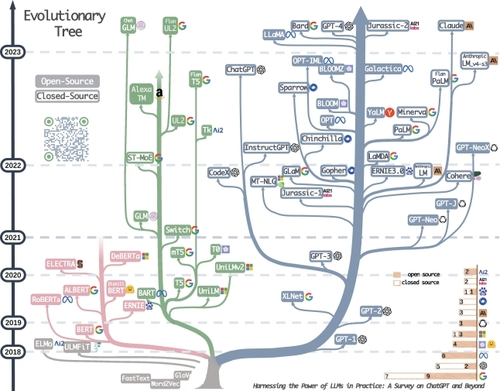
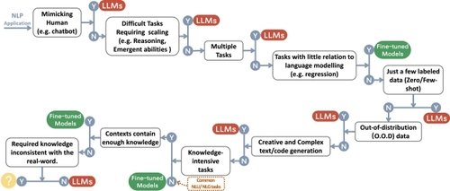

Harnessing the Power of LLMs in Practice: A Survey on ChatGPT and Beyond
Abstract
This article presents a comprehensive and practical guide for practitioners and end-users working with Large Language Models (LLMs) in their downstream Natural Language Processing (NLP) tasks. We provide discussions and insights into the usage of LLMs from the perspectives of models, data, and downstream tasks. First, we offer an introduction and brief summary of current language models. Then, we discuss the influence of pre-training data, training data, and test data. Most importantly, we provide a detailed discussion about the use and non-use cases of large language models for various natural language processing tasks, such as knowledge-intensive tasks, traditional natural language understanding tasks, generation tasks, emergent abilities, and considerations for specific tasks. We present various use cases and non-use cases to illustrate the practical applications and limitations of LLMs in real-world scenarios. We also try to understand the importance of data and the specific challenges associated with each NLP task. Furthermore, we explore the impact of spurious biases on LLMs and delve into other essential considerations, such as efficiency, cost, and latency, to ensure a comprehensive understanding of deploying LLMs in practice. This comprehensive guide aims to provide researchers and practitioners with valuable insights and best practices for working with LLMs, thereby enabling the successful implementation of these models in a wide range of NLP tasks. A curated list of practical guide resources of LLMs, regularly updated, can be found at https://github.com/Mooler0410/LLMsPracticalGuide. An LLMs evolutionary tree, editable yet regularly updated, can be found at llmtree.ai.
1 Introduction
In recent years, the rapid development of large Language models has been revolutionizing the field of natural language processing [14, 139, 142]. These powerful models have shown great potential in addressing a variety of Natural Language Processing (NLP) tasks and real-world cases, ranging from Natural Language Understanding (NLU) to generation tasks, even paving the way to Artificial General Intelligence (AGI). However, utilizing these models effectively and efficiently requires a practical understanding of their capabilities and limitations, as well as the characteristics of the data and tasks.
To provide a guide for practitioners and end-users, this work focuses on the practical aspects of working with Large Language Models (LLMs) in the real world and downstream NLP tasks. This guide aims to provide practical advice on why or why not to choose LLMs for a given task, as well as guidance on how to select the most suitable LLM, taking into account factors such as model sizes, computational requirements, and the availability of domain-specific pre-trained models. This work offers a thorough understanding of LLMs from a practical perspective, therefore, empowers practitioners and end-users with the practical knowledge needed to successfully leverage the power of LLMs for their own tasks.
Our work is structured as follows. First, our work offers a brief introduction to LLMs by discussing the most important models, such as GPT-style and BERT-style architectures. Then, we delve into the critical factors that influence model performance from the data perspective, including pre-training data, training/tuning data, and test data. Last and most importantly, we dive deep into various concrete tasks, offering insights into the applicability of LLMs for knowledge-intensive tasks, traditional NLU tasks, and generation tasks, along with the emergent abilities that these models possess and challenging real-world scenarios. We provide detailed examples to highlight both the successful use cases and the limitations of LLMs in practice.
To analyze the abilities of large language models, we compare them with fine-tuned models. As of present, there is no universally recognized definition for LLMs and fine-tuned models. With consideration to practical utility, in our article, the definitions of them are proposed as: LLMs are huge language models pretrained on large amounts of datasets without tuning on data for specific tasks; fine-tuned models are typically smaller language models, which are also pretrained and then further tuned on a smaller, task-specific dataset to optimize their performance on that task.1
This work summarizes the following main practical guides for using LLMs:—Natural language understanding. Employ the exceptional generalization ability of LLMs when facing out-of-distribution data or with very few training data.—Generation. Utilize LLMs’ capabilities to create coherent, contextually relevant, and high-quality texts and code for various applications.—Knowledge-intensive tasks. Leverage the extensive knowledge stored in LLMs for tasks requiring domain-specific expertise or general world knowledge.—Reasoning ability. Understand and harness the reasoning capabilities of LLMs to improve decision-making and problem-solving in various contexts.—Real-world scenarios. Take the advantages of LLMs in real-world scenarios due to their ability to handle noisy input, tackle unformalized tasks, and follow human instructions after alignment.
Recently, numerous surveys have delved into the evolution of LLMs. For instance, [139] offers a review of the recent advancements in LLMs, including their foundational principles, key contributions, and predominant techniques. [20] specifically focuses on evaluating the performance of LLMs, while [51] provides an in-depth overview of the current understanding of reasoning capabilities within these models. Additionally, Reference [106] explores the challenges and opportunities related to discerning text generated by LLMs. Despite the wealth of existing literature, most surveys are tailored for an audience of computer science researchers. There is a noticeable gap in the provision of practical guidance for practitioners and end-users who may not have specialized knowledge of LLMs but wish to leverage their capabilities for downstream tasks. This survey aims to fill that void, offering a hands-on guide for a broader audience interested in harnessing the power of LLMs for various NLP applications.

2 Practical Guide for Models
This section provides a brief introduction to state-of-the-art LLMs. These models differ in their training strategies, model architectures, and use cases. To provide a clearer understanding of the LLM landscape, we categorize them into three types: non-causal attention language models, half-causal attention language models, and causal attention language models.2 In Figure 1, we show the detailed evolution process of language models. From the evolutionary tree, we make the following interesting observations:(a)Decoder-only models have been gradually dominating the development of LLMs. At the early stage of LLMs development, decoder-only models were not as popular as encoder-only and encoder-decoder models. However, after 2021, with the introduction of game-changing LLMs - GPT-3, decoder-only models experienced a significant boom. Meanwhile, after the initial explosive growth brought about by BERT, encoder-only models gradually began to fade away.(b)OpenAI consistently maintains its leadership position in LLM, both currently and potentially in the future. Other companies and institutions are struggling to catch up with OpenAI in developing models comparable to GPT-3 and the current GPT-4. This leadership position may be attributed to OpenAI’s steadfast commitment to its technical path, even when it was not widely acknowledged initially.(c)Meta contributes significantly to open-source LLMs and promotes research of LLMs. When considering contributions to the open-source community, particularly those related to LLMs, Meta stands out as one of the most generous commercial companies, as all the LLMs developed by Meta are open-sourced.(d)LLMs exhibit a tendency towards closed-sourcing. In the early stages of LLM development (before 2020), the majority of models were open-sourced. However, with the introduction of GPT-3, companies have increasingly opted to close-source their models, such as PaLM, LaMDA, and GPT-4. Consequently, it has become more difficult for academic researchers to conduct experiments on LLM training. As a result, API-based research could become the predominant method in the academic community.(e)Encoder-decoder models remain promising, as this type of architecture is still being actively explored, and most of them are open-sourced. Google has made substantial contributions to open-source encoder-decoder architectures. However, the flexibility and versatility of decoder-only models seem to make Google’s insistence on this direction less promising.
2.1 BERT-style Language Models: Encoder-Decoder or Encoder-only
As natural language data is readily available and unsupervised training paradigms have been proposed to better utilize extremely large datasets, this motivates the unsupervised learning of natural language. Non-causal models are one of the earliest pretrained language models that sparked discussions. They are encoder-only models and adapt the approach of predicting masked words in a sentence while considering the surrounding context. This training paradigm is known as the masked language modeling. As the name suggests, for such models, all input tokens are visible to each other in the attention mechanism, which does not follow the casualty of language. Notable examples of non-causal models include BERT [31] and RoBERTa [76]. Non-causal models have shown good performance in the field of natural language understanding.
2.2 Decode-only Models: GPT-style Language Models
Although language models are typically task-agnostic in architecture, these methods require fine-tuning on datasets of the specific downstream task. Researchers found that scaling up language models significantly improves the few-shot, even zero-shot performance [18]. The most successful models for better few-shot and zero-show performance are causal attention language models. They are decoder-only and are trained by generating the next word in a sequence given the preceding words. For each token, only tokens before it is visible to this token in the attention mechanism following the casualty of human speaking. The GPT series belong to this category. They are also called autoregressive models. These models have been widely used for downstream tasks such as text generation and question answering. Examples of autoregressive language Models include GPT-3 [18], OPT [137], PaLM [25], and BLOOM [102]. The game changer, GPT-3, for the first time, demonstrated reasonable few-/zero-shot performance via prompting and in-context learning.
2.3 Hybrid Models
In addition to the standard encode-decode model, encoder-only, and decoder-only models, there are a series of works that employ hybrid pretraining objectives such as prefixLM [9, 96]. These models integrate aspects of both decoder and encoder models. For these models, the input text is divided into two parts when using the attention mechanism. The first part mirrors the encoder section in encoder-decoder models or the prefix segment in models using a prefixLM objective. However, the second part aligns with the method of decoder-only models, in which each token only accesses information from the tokens that came before it. The primary goal of these hybrid models is to boost the generative abilities of decoder-only models. Many popular models including T5 [96], UniLMv2 [9], and BART [67], belong to this category.
2.4 The Architecture of LLMs
The architecture of Language Models varies depending on their category—BERT-style (Encoder-Decoder or Encoder-only), GPT-style (Decode-only), or Hybrid models. In this section, we briefly introduce the architectures of the recent LLMs as follows:
• Encoder-only or Encoder-Decoder models introduced the concept of bidirectional pretraining. These models, such as BERT and RoBERTa, consist of an encoder-only architecture. In the case of encoder-only models, they use a masked language modeling training paradigm. This involves predicting masked words within a sentence while considering the surrounding context. Unlike decoder-only models, all input tokens in encoder-only models are visible to each other in the attention mechanism, disregarding the causality of language. However, encoder-decoder models use the encoder to process the input data and compress the information into a context-rich representation, and the decoder to generate the output sequence from this representation.
• Decode-only models, exemplified by the GPT series, are decoder-only architectures trained using autoregressive language modeling. Autoregressive training involves generating the next word in a sequence given the preceding words. Tokens in these models can only attend to tokens that precede them in the input sequence, adhering to the causal structure of language. GPT models have demonstrated impressive few-shot and zero-shot performance in tasks like text generation and question answering, especially when scaled up.
These three categories represent the main architectural paradigms of LLMs and have significantly contributed to the advancements in natural language understanding and generation. Researchers continue to explore and refine these architectures, pushing the boundaries of what LLMs can achieve in various language-related tasks.
When selecting an appropriate LLM architecture for the downstream tasks, several considerations come into play. If the task relies on capturing bidirectional contexts, such as Named Entity Recognition or document classification, then Encoder-only models like BERT and RoBERTa may be more suitable. However, if the task focus is on generating text like translation or summarization, then Decoder-only, or Encoder-Decoder models like GPT-series and BART-series could be more beneficial. Additionally, the model size is another crucial factor; larger models generally perform better but come at the cost of computational resources and latency. Therefore, balancing performance and resource availability is essential. Last, always consider the nature of the specific task, as specialized architectures might offer benefits over general-purpose models.
3 Practical Guide for Data
In this section, we will be discussing the critical role that data plays in selecting appropriate models for downstream tasks. The impact of data on the models’ effectiveness starts during the pre-training stage and continues through to the training and inference stages.
Remark 1 (1) LLMs generalize better than fine-tuned models in downstream tasks facing out-of-distribution data, such as adversarial examples and domain shifts. Evidenced by the comparison-based empirical results in related literature like References [38, 95, 117], as well as the generalization improvement gained through alignment techniques like Reinforcement Learning from Human Feedback (RLHF) [89]. More in Section 3.3. (2) LLMs are preferable to fine-tuned models when working with limited annotated data, and both can be reasonable choices when abundant annotated data is available, depending on specific task requirements. This is evidenced by LLMs impressive zero-shot and few-shot learning ability [18, 132], as well as the fact that in-context learning does not require weight update, which mechanically prevents unfavorable fine-tuning-related behavior like catastrophic forgetting. More in Section 3.2. (3) It is advisable to choose models pre-trained on fields of data that are similar to downstream tasks. We investigate this data alignment on various popular LLMs in Section 3.1 and find preferable results when such alignment exists.
3.1 Pre-training Data
Pre-training data plays a pivotal role in the development of large language models. As the foundation of remarkable capabilities [5, 57] of LLMs, the quality, quantitative, and diversity of pre-training data influence the performance of LLMs significantly [135]. The commonly used pre-training data consists of a myriad of text sources, including books, articles, websites, and codes. The data is carefully curated to ensure a comprehensive representation of human knowledge, linguistic nuances, and cultural perspectives. The importance of pretraining data lies in its capacity to inform the language model with a rich understanding of word knowledge, grammar, syntax, and semantics, as well as the ability to recognize context and generate coherent responses. Recent studies indicate that pre-training data quality is a crucial factor affecting model performance. For example, a study by Gunasekar et al. [43] demonstrated that a Transformer-based model with only 1.3 billion parameters could achieve commendable performance on code generation tasks when trained on 6 billion tokens of “textbook quality” web data and an additional 1 billion tokens generated synthetically using GPT-3.5. The diversity of pretraining data also plays a crucial role in shaping the model’s performance, and the selection of LLMs highly depends on the components of the pretraining data. For example, PaLM [25] and BLOOM [102] excel in multilingual tasks and machine translation with an abundance of multilingual pretraining data. Moreover, PaLM’s performance in Question Answering tasks is enhanced by incorporating a considerable amount of social media conversations and Books corpus [25]. Likewise, the code execution and code completion capabilities of GPT-3.5 (code-davinci-002) are amplified by the integration of code data in its pretraining dataset. In summary, when end-users aim to directly employ pre-trained models for their specific downstream tasks, it is recommended to select a model that has been pre-trained on data from a similar domain. If end-users intend to assemble their own pre-training data and train a custom model, then both the quality and quantity of the data become critical factors that substantially influence the model’s performance.
3.2 Fine-tuning Data
When deploying a model for downstream tasks, it is essential to consider three primary scenarios based on the availability of annotated data: zero, few, and abundant. In this section, we provide a succinct overview of the appropriate models to employ for each scenario.
Zero annotated data: In scenarios where annotated data is unavailable, utilizing LLMs in a zero-shot setting proves to be the most suitable approach. LLMs have been shown to outperform previous zero-shot methods [132]. Additionally, the absence of a parameter update process ensures that catastrophic forgetting [59] is avoided, since the language model parameters remain unaltered.
Few annotated data: In this case, the few-shot examples are directly incorporated in the input prompt of LLMs, which is also called in-context learning, and these examples can effectively guide LLMs to generalize to the task. As reported in Reference [18], one-shot and few-shot performance make significant gains, even matching the performance of the SOTA fine-tuned open-domain models. And LLMs’ zero/few-shot ability can be improved further by scaling [18]. Alternatively, some few-shot learning methods are invented to enhance fine-tuned models, such as meta-learning [64] or transfer learning [99]. However, performance might be inferior compared to using LLMs due to fine-tuned models’ smaller scale and overfitting.
Abundant annotated data: With a substantial amount of annotated data for a particular task available, both fine-tuned models and LLMs can be considered. In most cases, fine-tuning the model can fit the data pretty well. Although, LLMs can be used to meet some constraints such as privacy [108]. In this scenario, the choice between using a fine-tuned model or a LLM is task-specific and also depends on many factors, including desired performance, computational resources, and deployment constraints.
In a brief summary: LLMs are more versatile w.r.t. data availability, while fine-tuned models can be considered with abundant annotated data.
3.3 Test Data/User Data
When deploying LLMs for downstream tasks, we often face challenges stemming from distributional differences between the test/user data and that of the training data. These disparities may encompass domain shifts [143], out-of-distribution variations [35], or even adversarial examples [95]. Such challenges significantly hinder fine-tuned modes’ effectiveness in real-world applications. They fit into a specific distribution and have a poor ability to generalize to out-of-distribution (OOD) data. However, LLMs perform quite well facing such scenarios, because they do not have an explicit fitting process. Moreover, recent advancements have further enhanced the ability of language models in this regard. The Reinforcement Learning from Human Feedback (RLHF) method has notably enhanced LLMs’ generalization capabilities [89]. For example, InstructGPT demonstrates proficiency in following various instructions for a wide range of tasks and occasionally complying with instructions in different languages, even though such instructions are scarce. Similarly, ChatGPT exhibits consistent advantages on most adversarial and OOD classification and translation tasks [117]. Its superiority in understanding dialogue-related texts led to an impressive performance on the DDXPlus dataset [112], a medical diagnosis dataset designed for OOD evaluation. In summary, LLMs generalize better than fine-tuned models in the most downstream tasks.
4 Practical Guide for NLP Tasks
In recent times, LLMs are predominantly generative models. Executing a typical NLP task with LLMs differs from the approach with traditional models. The latter often transforms labels into somewhat arbitrary integers. For LLMs, both the labels and input texts are first represented using natural language descriptions. The LLMs then process these natural language inputs and generate predictions, such as the label name, directly.
When utilizing LLMs, certain practical strategies can enhance their capabilities. Two of the most commonly employed are Chain-of-Thought (CoT) and In-context Learning (ICL):
In-context Learning. The ICL paradigm is widely adopted with LLMs [18, 34, 78]. In ICL, LLMs make predictions based on contexts enhanced with a few sample examples. An LLM in ICL mode receives a set of examples and a query related to a specific task. This data is then presented as examples in a prompt to the model. Unlike traditional supervised learning, which updates model parameters during training, ICL does not alter parameters. It relies on the pretrained capabilities of LLMs, trusting them to identify patterns in the demonstrations and predict accurately. ICL can markedly improve LLM performance across various tasks. However, while ICL shows promise, several aspects remain elusive. Its efficacy can vary based on factors like the prompting template or the choice and order of in-context examples. Furthermore, the inner workings of ICL are not fully understood, with only a handful of studies investigating its mechanics [46, 103].
Chain-of-Thought. Despite LLMs’ prowess in handling numerous tasks, they sometimes require augmentation for intricate reasoning tasks [26, 125]. The CoT prompting method was devised to bolster LLM reasoning abilities. CoT demands that LLMs emulate a sequential, logical progression reminiscent of human thought processes. Using a few-shot approach, CoT supplies the LLM with task-solving steps in prompts, guiding it through a systematic reasoning process. Rather than offering a direct answer, the model is urged to methodically work through the problem, delineating logical steps, similar to human problem-solving techniques. In the zero-shot scenario, CoT merely instructs the model to approach the problem by “thinking through it step by step.” CoT can enhance a model’s proficiency in intricate reasoning tasks, yielding more precise and refined responses. It also provides a deeper insight into the model’s cognitive processes. This concept has been expanded upon, leading to the “X-of-Thought” (XoT) methodology [11, 131], which encompasses a vast array of methods related to sequential reasoning in AI.
Following this understanding of how LLMs function in NLP tasks, we will next we discuss the specific scenarios where they are particularly effective (the use case), and contrastingly, situations where their application might not be the most optimal choice (the no-use case).
4.1 Traditional NLU Tasks
Traditional NLU tasks are some fundamental tasks in NLP including text classification, named entity recognition (NER), entailment prediction, and so on. Many of them are designed to serve as intermediate steps in larger AI systems, such as NER for knowledge graph construction.
Remark 2 Fine-tuned models generally are a better choice than LLMs in traditional NLU tasks, but LLMs can provide help while requiring strong generalization ability. We demonstrate how fine-tuned models are delivering superior performance to LLMs across such tasks in Section 4.1.1 and point out a few generalization-required NLU tasks where LLMs are preferable in Section 4.1.2.
4.1.1 No-use Case.
In most natural language understanding tasks, such as tasks in GLUE [116] and SuperGLUE [115], fine-tuned models still have better performance, if such tasks come with rich well-annotated data and contain very few out-of-distribution examples on test sets. For different tasks and datasets, the gap between small fine-tuned models and LLMs varies.
In text classification, on most datasets, LLMs perform slightly worse than fine-tuned models. For sentiment analysis, such as on IMDB [81] and SST [104], fine-tuned models and LLMs perform equally well. For toxicity detection, which is another iconic text classification task, the gap is much larger. All LLMs cannot perform well on this task, and on CivilComments [15] even the best one is only better than random guessing [69]. However, most popular fine-tuned models can obtain much better performance [36]. and the Perspective API3 is still one of the best for detecting toxicity. This API is powered by a multilingual BERT-based model, which is tuned on publicly available toxicity data and several smaller single-language CNNs distilled from this model. This might be due to the fact that toxicity is defined by subtle nuances in linguistic expressions, and large language models are unable to accurately comprehend this task solely based on the provided input.
The trend of performance gaps is similar in some other tasks. For natural language inference (NLI) tasks, on most datasets, such as on RTE [116] and SNLI [16], fine-tuned models perform better than LLMs, while on some data such as CB [115], LLMs have obtained comparable performance with fine-tuned models [25]. For question answering (QA), on SQuADv2 [97], QuAC [24], and many other datasets, fine-tuned models have superior performance, while on CoQA [98], LLMs perform as well as fine-tuned models [25].
In information retrieval (IR) tasks, LLMs are not widely exploited yet. One major reason is that IR tasks are fundamentally different from others. There is no natural way to transform the thousands of candidate texts into a few/zero-shot form, which is required by LLMs. The existing evaluation results on MS MARCO (regular/TREC) [85] show that methods based on fine-tuned models have better performance [69]. In this evaluation, the LLMs rank passages in an unorthodox way, which requires the LLMs to produce probabilities for passages one by one.
For some low-level intermediate tasks, which are not intended for regular users but rather for high-level tasks, such as NER and dependency parsing, there is not enough result coming from LLMs, because the most current evaluation of LLMs focuses on practical tasks. According to available evaluation results, for the NER task, CoNLL03 [100] is still a challenge for LLMs [94], where the performance of fine-tuned models is around as twice as LLMs. These intermediate tasks may vanish soon, because LLMs can take over high-level tasks without the help of those intermediate tasks (e.g., dependency parsing for coding tasks; NER for some text generation tasks).
In brief, for most traditional NLU tasks, a fine-tuned model is a better choice in terms of the performance on benchmark datasets and the computational cost. The scale of LLMs is usually or even larger than fine-tuned models. One possible cause for the inferior performance of LLMs on certain tasks can be the design of instructions/prompts. Transforming input from tasks like IR and sentence labeling into a few/zero-short instruction form is non-trivial. There may be better ways to adapt language models to traditional NLP tasks in the future. However, the upper limit of capabilities of fine-tuned models is not reached, and some methods like FLAN-tuning [77] can further boost the performance on NLU tasks. Another interesting finding is that on NLU tasks, after fine-tuning, masked language models, like T5 [96], are better than most auto-regressive language models at the same scale, while some recent results imply that this gap can be bridged by scaling [25].
4.1.2 Use Case.
However, there are still some NLU tasks suitable for LLMs.
One of the representative tasks is miscellaneous text classification [69]. In contrast to classic domain-specific text classification tasks such as sentiment analysis, miscellaneous text classification deals with a diverse range of topics and categories that may not have a clear or strong relationship with one another. It is closer to real-world cases and hard to be formatted for using fine-tuned models. Another is the Adversarial NLI (ANLI) [86]. It is a difficult dataset composed of adversarially mined natural language inference questions in three rounds (R1, R2, and R3). LLMs have shown superior performance on ANLI, especially on the R3 and R2. Both examples demonstrate the exceptional ability of LLMs to generalize well on out-of-distribution and sparsely annotated data in traditional NLP tasks, surpassing that of fine-tuned models. We have discussed this in Section 3.3.
4.2 Generation Tasks
Generation tasks broadly encompasses two major categories of tasks, with the goal of creating coherent, meaningful, and contextually appropriate sequences of symbols. The first type focuses on converting input texts into new symbol sequences, as exemplified by tasks like paragraph summarization and machine translation. The second type, “open-ended” generation, aims to generate text or symbols from scratch to accurately match input descriptions such as crafting emails, composing news articles, creating fictional stories, and writing code.
Remark 3 Due to their strong generation ability and creativity, LLMs show superiority at most generation tasks. We demonstrate the superiority of LLMs on various popular generative benchmarks like summarization, translation, coding, and even just some open-end generative tasks in Section 4.2.1. We also investigate some generative benchmarks where the LLMs fall short in Section 4.2.2, which generally happen due to extreme resource/data limitation.
4.2.1 Use Case.
Generation tasks require models to have a comprehensive understanding of the input contents or requirements and a certain level of creativity. This is where LLMs excel.
For summarization tasks, although LLMs do not have an obvious advantage over fine-tuned models under traditional automatic evaluation metrics, such as ROUGE [70], human evaluation results indicate that humans tend to prefer the results generated by LLMs [42, 138] compared to that of fine-tuned models. For example, on CNN/DailyMail [83] and XSUM [84], fine-tuned models like Brio [75] and Pegasus [136] have much better performance than any LLMs w.r.t. ROUGE, but LLMs like OPT [137] perform far better in human evaluation considering all aspects including faithfulness, coherence, and relevance [138]. This demonstrates the superiority of LLMs in summarization tasks. However, it implies that current summarization benchmarks do not contain summaries with high quality or the automatic metrics are not proper for the evaluation of summarization.
In machine translation (MT), LLMs can perform competent translation, although the average performance is slightly worse than some commercial translation tools [53] considering some automatic metrics like BLEU [91]. LLMs are particularly good at translating some low-resource language texts to English texts, such as in the Romanian-English translation of WMT’16 [13], zero-shot or few-shot LLMs can perform better than SOTA fine-tuned model [25]. This is mainly due to the fact that English resources compose the main part of the pre-training data. BLOOM [102] is pre-trained on more multi-lingual data, leading to better translation quality in both rich-resource and low-resource translation. Another interesting finding is that BLOOM achieves good translation quality among Romance languages, even for translation from Galician, which is not included in the pre-training data. One reasonable explanation is that texts from some languages in the same language group can help the LLMs learn more from the similarity. If more multi-lingual texts can be added to the pre-training data, then the translation capability may be improved further.
Additionally, LLMs are highly skilled in open-ended generations. One example is that the news articles generated by LLMs are almost indistinguishable from real news articles by humans [18]. LLMs are remarkably adept at code synthesis as well. Either for text-code generation, such as HumanEval [22] and MBPP [7], or for code repairing, such as DeepFix [45], LLMs can perform pretty well. GPT-4 can even pass 25% problems in Leetcode, which are not trivial for most human coders [88]. With training on more code data, the coding capability of LLMs can be improved further [25]. While performing well on such tasks, the codes generated by LLMs should be tested carefully to figure out any subtle bugs, which is one of the main challenges for applying LLMs in code synthesis.
4.2.2 No-use Case.
Fine-tuned models, such as DeltaLM+Zcode [130], still perform best on most rich-resource translation and extremely low-resource translation tasks. In rich resource machine translation, fine-tuned models slightly outperform LLMs [25, 102]. And in extremely low-resource machine translation, such as English-Kazakh translation, fine-tuned models significantly perform better than LLMs.
4.3 Knowledge-intensive Tasks
Knowledge-intensive NLP tasks refer to a category of tasks that have a strong reliance on background knowledge, domain-specific expertise, or general real-world knowledge. These tasks go beyond simple pattern recognition or syntax analysis. And they are highly dependent on memorization and proper utilization of knowledge about specific entities, events, and common sense of our real world.
Remark 4 (1) LLMs excel at knowledge-intensive tasks due to their massive real-world knowledge. Evidenced by their dominating performance on various general Question-Answering (QA) benchmarks as showcased in Section 4.3.1. (2) LLMs struggle when the knowledge requirements do not match their learned knowledge, or when they face tasks that only require contextual knowledge, in which case fine-tuned models can work as well as LLMs. We walk through some specific examples in this category in Section 4.3.2 and point out that this issue can be reasonably mitigated with the help of knowledge retrieval pipelines.
4.3.1 Use Case.
With billions of tokens and parameters, LLMs have more real-world knowledge than fine-tuned models.
Closed-book question-answering tasks require the model to answer a given question about factual knowledge without any external information. It does require the memorization of real-world knowledge in the model. LLMs perform better on nearly all datasets, such as on NaturalQuestions [62], WebQuestions [10], and TriviaQA [56]. On TriviaQA, even zero-shot LLMs is still much better [25].
The massive multitask language understanding (MMLU) [47] is also highly knowledge-intensive. It contains multiple-choice questions spanning over 57 different subjects and requires general knowledge of the model. It is pretty challenging even for LLMs, although the newly released GPT-4 [88] outperforms existing models by a considerable margin in English with a satisfactory 86.5% accuracy.
Also, some tasks in Big-bench [105], which are designed to probe LLMs and extrapolate their future capabilities, heavily relied on the memorization of real-world knowledge. In such tasks, the performance of some LLMs is better than the average level of humans, and even comparable to the best human performance. For example, the task Hindu_knowledge requires models to give facts about Hindu mythology, Periodic Elements require the capability of predicting the element name from the periodic table and Physics tests the physics knowledge of models by asking for the formula needed to solve a given physics problem.
4.3.2 No-use Case.
There are some other tasks requiring knowledge different from that learned by LLMs. The required knowledge is not that learned by LLMs about the real world. In such tasks, LLMs are not notably superior.
Some tasks only require the model to capture the self-contained knowledge in the contexts. The knowledge in the contexts from the input is enough for the model to make predictions. For these tasks, small fine-tuned models can work pretty well. One such task is machine reading comprehension (MRC). An MRC task provides several paragraphs and requires the model to predict the answer to questions based on these paragraphs. We have discussed MRC in the previous section, because it is also a traditional NLU task.
Another scenario is that the knowledge within LLMs about real world is useless to the task, or even the required knowledge is counterfactual to the real world. As a result, the LLMs cannot work well on such tasks. In some cases, inconsistent knowledge may even make the LLMs worse than random guessing. For example, in Big-Bench, the Mnist ascii task requires the model to tell the digit represented by an ASCII art. The capability required by this task is nothing about real-world knowledge. Also, in the Inverse Scaling Phenomenon competition [82], the task redefine math redefines a common symbol and requires the model to choose between the original meaning and the meaning derived from the redefinition. What it requires contrasts with the LLMs’ knowledge, LLMs even perform worse than random guessing.
As an alternative to real-world knowledge in LLMs, access to extra knowledge is allowed, and models can thus get enough knowledge for a task via retrieval augmentation. The basic idea of retrieval augmentation is to add an extra information retrieval step prior to making predictions, in which, some useful texts related to the task will be retrieved from a large corpus. Then, the model will make predictions based on both the input contexts and the retrieved texts. With retrieved additional information, the closed-book task can become “open-book.” In such a scenario, fine-tuned models are pretty good with much smaller sizes, because the required knowledge can be obtained by retrieving. For example, on NaturalQuestions [62], with extra corpus, retrieval augmented models [52, 58] are better than other methods.
4.4 Abilities Regarding Scaling
Scaling of LLMs (e.g., parameters, training computation, etc.) can greatly empower pretrained language models. With the model scaling up, a model generally becomes more capable in a range of tasks. Reflected in some metrics, the performance shows a power-law relationship with the model scale. For example, the cross-entropy loss, which is used to measure the performance for language modeling, decreases linearly with the exponential increase in the model scale, which is also called “scaling-law” [48, 57]. For some crucial abilities, such as reasoning, scaling the model has gradually transformed these abilities from a very low state to a usable state, and even approaching human capabilities. In this section, we provide an overview of the usage of LLMs in terms of the abilities and behaviors of LLMs along with scaling.
Remark 5 (1) With the exponential increase of model scales, LLMs become especially capable of reasoning like arithmetic reasoning and commonsense reasoning. We give a walk-through of some popular reasoning benchmarks with respect to both reasoning categories in Section 4.4.1, as well as some techniques that may help on this school of tasks, like Chain-of-Thought (CoT) prompting [125]. (2) Emergent abilities become serendipity for uses that arise as LLMs scale up, such as ability in word manipulation and logical ability. We discuss the definition of emergent abilities and specific task examples in Section 4.4.2. (3) In many cases, performance does not steadily improve with scaling due to the limited understanding of how large language models’ abilities change as they scale up. We discuss such inverse-scaling and U-shaped phenomenons in Section 4.4.3, where larger models are not always preferable.
4.4.1 Use Case with Reasoning.
Reasoning, which involves making sense of information, drawing inferences, and making decisions, is one of the essential aspects of human intelligence. It is challenging for NLP. Many existing reasoning tasks can be classified into commonsense reasoning and arithmetic reasoning.
Arithmetic reasoning/problem solving. The arithmetic reasoning capability of LLMs benefits greatly from the scaling of model size [51]. For GPT-3, the ability of two-digit addition only becomes apparent when the number of parameters exceeds 13B [18]. Tasks to test arithmetic reasoning are trivial for humans and designed to challenge the capability of transferring natural language into mathematical symbols and multi-step inference. On GSM8k [29], SVAMP [92], and AQuA [71], LLMs, as generalists, have competitive performance with most methods that have task-specific designs. And GPT-4 overperforms any other methods [88], even some huge models particularly tuned for arithmetic problems [114]. Nevertheless, it should be noted that, without the intervention of external tools, LLMs may occasionally make mistakes in performing basic calculations, although CoT prompting [125] can significantly improve LLMs’ ability in calculations.
Commonsense reasoning. Commonsense reasoning not only requires LLMs to remember factual knowledge but also requires LLMs to do several inference steps about the facts. Commonsense reasoning increases gradually with the growth of model size. Compared to fine-tuned models, LLMs keep the superiority on most datasets, such as StrategyQA [40] and ARC-C [28]. Especially on ARC-C, which contains difficult questions in science exams from grades 3 to 9, GPT-4 has been close to the performance of 100% (96.3%) [88].
4.4.2 Use Cases with Emergent Abilities.
Scaling of models also endows the model with some unprecedented, fantastic abilities that go beyond the power-law rule. These abilities are called “emergent ability.” As defined in Reference [123], emergent abilities of LLMs are abilities that are not present in smaller-scale models but are present in large-scale models. This means such abilities cannot be predicted by extrapolating the performance improvements on smaller-scale models and the model suddenly gains good performance on some tasks once the scale exceeds a certain range. The emergent ability is typically unpredictable and surprising, leading to tasks that emerge randomly or unexpectedly. We examine concrete examples of the emergent abilities of LLMs and provide them as an important reference for deciding whether to leverage LLMs’ emergent abilities.
Handling word manipulation is a typical emergent ability. It refers to the ability to learn symbolic manipulations, such as the reversed words [18], in which the model is given a word spelled backwards, and must output the original word. For example, GPT-3 [18] shows the emergent ability for word sorting, and word unscrambling tasks. PaLM [25] exhibits the emergent ability on ASCII word recognition4 and hyperbaton5 task. The logical abilities of language models tend to emerge as the model scales up, such as logical deduction, logical sequence, and logic grid puzzles. Additionally, other tasks, such as advanced coding (e.g., auto debugging, code line description), and concept understanding (e.g., novel concepts, simple Turing concepts), are also use cases with the emergent abilities of large language models.
4.4.3 No-use Cases and Understanding.
Although in most cases, as discussed above, larger models bring better performance, there are still many exceptions that should be considered when choosing the appropriate model.
On certain tasks, with the size of LLMs increasing, the performance begins to decrease, such as Redefine-math: tests whether language models are able to work with common symbols when they are redefined to mean something else; Into-the-unknown: requires the model to choose which piece of information would help answer a question; Memo-trap: asks an LM to write a phrase in a way that starts like a famous quote but ends differently6 This is also called Inverse Scaling Phenomenon. Another interesting phenomenon observed in the scaling of LLMs is called the U-shaped Phenomenon [124]. As the name implies, This phenomenon refers to that as LLM size increases, their performance on certain tasks initially improves but then starts to decline before eventually improving again, such as on: Hindsight-neglect: it tests whether language models are able to assess whether a bet was worth taking based on its expected value; NegationQA: this task takes an existing multiple-choice dataset and negates a part of each question to see if language models are sensitive to negation; Quote-repetition: it asks models to repeat back sentences given in the prompt, with few-shot examples to help it recognize the task. Hence the risk of diminishing performance should be noted and if the task is similar to those we just discussed, careful consideration should be given to whether or not to use huge LLMs.
Gaining a deeper understanding of emergent abilities, inverse scaling phenomenon and U-shape phenomenon in LLMs is essential for advancing research in this field. In a certain sense, the U-shape phenomenon suggests that small-scale models and huge-scale models make predictions with different internal mechanisms. From this perspective, the U-shape phenomenon can be seen as a transformation of the inverse-scaling phenomenon due to some emergent abilities from sufficiently large models [124]. GPT-4 [88] exhibits a reversal of the inverse scaling phenomenon in some cases, such as on a task called Hindsight Neglect. The explanation for these behaviors of LLMs during scaling is still an open problem. Several hypotheses have been proposed. For emergent abilities, one explanation is that there may be multiple key steps for a task and the LLM cannot handle this task until it is large enough to handle every step, and another explanation is focused on the granularity of evaluation metrics [123]. For inverse-scaling phenomenon and u-shape phenomenon, the explanations mainly focus on the model’s over-reliance on information from its prior rather than the input prompts, valid but misleading few-shot examples, and distracting easier tasks within a hard task [124].
4.5 Miscellaneous Tasks
This section explores miscellaneous tasks that cannot be involved in previous discussions, to better understand LLMs’ strengths and weaknesses.
Remark 6 (1) Fine-tuned models or specified models still have their space in tasks that are far from LLMs’ pretraining objectives and data, as indicated in Sections 4.1.1 and 4.5.1, where the lack resource-alignment is one of the major cause. (2) LLMs are excellent at mimicking human, data annotation and generation. They can also be used for quality evaluation in NLP tasks and have bonuses like interpretability. We provide several successful examples of such LLM-based generation/evaluation or human-LLM collaborations in Section 4.5.2.
4.5.1 No-use Case.
LLMs generally struggle with some tasks due to differences in objectives and training data.
Although LLMs have achieved remarkable success in various natural language processing tasks, their performance in regression tasks has been less impressive. For example, ChatGPT’s performance on the GLUE STS-B dataset, which is a regression task evaluating sentence similarity, is inferior to a fine-tuned RoBERTa performance [141]. The Regression tasks typically involve predicting a continuous value rather than a discrete label, posing unique challenges for LLMs. One primary reason for their subpar performance is the inherent difference between the language modeling objective and the regression task objective. LLMs are designed to predict the next word in a sequence or generate coherent text, with their pre-training focused on capturing linguistic patterns and relationships. Consequently, their internal representations may not be well-suited for modeling continuous numerical outputs. Besides, LLMs have predominantly been trained on text data, focusing on capturing the intricacies of natural language processing. As a result, their performance on multimodal data, which involves handling multiple data types such as text, images, audio, video, actions, and robotics, remains largely unexplored. And fine-tuned multimodal models, like BEiT[120] and PaLI [23], still dominate many tasks such as visual question answering (VQA) and image captioning. Nonetheless, the recently introduced GPT-4 [88] has taken the step in multimodal fusion, but there is still a lack of detailed evaluation of its capabilities.
4.5.2 Use Case.
LLMs are particularly suitable for certain tasks.
LLMs are good at mimicking humans, acting as a chatbot, and performing various kinds of tasks. The LLMs-powered ChatGPT7 is surprising for its consistency, reliability, informativeness, and robustness during multiple utterances with humans. The human-feedback procedure plays an important role in acquiring such abilities.
LLMs can both act as a good annotator and data generator for data augmentation, such as in References [30, 32, 108, 133, 134]. Some LLMs have been found as good as human annotators [41] in some tasks. The collected texts from GPT-3.5 (text-davinci-003) have been used as human-like instruction-following demonstrations to train other language models [110].
LLMs can also be used for quality assessment on some NLG tasks, such as summarization and translation. On summarization tasks, GPT-4 as an evaluator achieves a higher correlation with humans than other methods with a large margin [74]. Some other evaluators based on LLMs [37, 60, 74, 118] also show good human alignment in more NLG tasks, especially compared with traditional metrics. But the LLM may have a bias towards the LLM-generated texts [74].
Also, as we discussed above, some abilities of LLMs bring bonuses in addition to performance improvement, such as interpretability. The CoT reasoning ability of LLMs can show how an LLM reaches the prediction, which is a good interpretation on the instance level, while it also improves performance.
4.6 Real-world “Tasks”
In the last part of this section, we will discuss the usage of LLMs and fine-tuned models in real-world “tasks.” We use the term “tasks” loosely, as real-world scenarios often lack well-formatted definitions like those found in academia. Many requests to models even cannot be treated as NLP tasks. Models face challenges in the real world from three perspectives:
• Noisy/unstructured input. Real-world input comes from real-world non-experts. They have little knowledge about how to interact with the model or even cannot use texts fluently. As a result, real-world input data can be messy, containing typos, colloquialisms, and mixed languages, unlike those well-formed data used for pre-training or fine-tuning.
• Tasks not formalized by academia. In real-world scenarios, tasks are often ill-defined by academia and much more diverse than those in academic settings. Users frequently present queries or requests that do not fall neatly into predefined categories, and sometimes multiple tasks are in a single query.
• Following users’ instructions. A user’s request may contain multiple implicit intents (e.g., specific requirement to output format), or their desired predictions may be unclear without follow-up questions. Models need to understand user intents and provide outputs that align with those intents.
Essentially, these challenges in the real world come from that users’ requests deviate significantly from the distribution of any NLP datasets designed for specific tasks. Public NLP datasets are not reflective of how the models are used [89].
Remark 7 LLMs are better suited to handle real-world scenarios compared to fine-tuned models. However, evaluating the effectiveness of models in the real world is still an open problem. In Section 4.6, we analyze why such tasks are challenging to solve, and oftentimes, even hard to properly define and evaluate. We also discuss why LLMs may have the competitive advantage on such tasks due to their impressive generalization power gained via pretraining on mass resources and tuning to provide (human) preferable outputs.
Handling such real-world scenarios requires coping with ambiguity, understanding context, and handling noisy input. Compared to fine-tuned models, LLMs are better equipped for this, because they have been trained on diverse data sets that encompass various writing styles, languages, and domains. Essentially, LLMs has seen nearly the whole real-world text distribution during pretraining, making them well-suited for these scenarios. Fine-tuned models, however, are often tailored to specific, well-defined tasks and may struggle to adapt to new or unexpected user requests. They heavily rely on clear objectives and well-formed training data that specify the types of instructions the models should learn to follow. Fine-tuned models may struggle with noisy input due to their narrower focus on specific distributions and structured data. An additional system is often required as an assistant for fine-tuned models to process unstructured context, determine possible intents, and refine model responses accordingly. Note that, to enable LLMs to better respond to open-ended user inputs and instructions, diverse instruction fine-tuning is still typically required to better align with real-world user input distribution and human intents of output. RLHF is then used as an additional step after instruction fine-tuning to precisely adjust the model input and output distribution to achieve the same goal. Nevertheless, the major capability of LLMs still rooted in the pretraining stage.
Additionally, some mechanics such as instruction tuning [101, 122] and human alignment tuning [89] further boost the capabilities of LLMs to better comprehend and follow user instructions. These methods improve the model’s ability to generate helpful, harmless, and honest responses while maintaining coherence and consistency [89, 101, 122]. While both methods can make LLMs better generalize to unseen tasks and instructions, it has been noticed that while human labelers prefer models tuned for human alignment [89] to models tuned with instructions from public NLP tasks, such as FLAN [122] and T0 [101]. The reason may be similar to reasons for fine-tuned models’ inferiority: public NLP tasks/datasets are designed for easy and automatic evaluation, and they can only cover a small part of real-world usage.
One of the main issues when it comes to real-world scenarios is how to evaluate whether the model is good or not. Without any formalized tasks or metrics, the evaluation of model effectiveness can only rely on feedback from human labelers. Considering the complexity and cost of human evaluation, there is no massive and systematic comparison between fine-tuned models and LLMs yet. Nevertheless, the huge success and popularity of LLMs such as chatGPT, have confirmed the superiority of LLMs to some extent.
4.7 Exemplary Products
In the sections above, we discussed the use case and no-use case of various common tasks, aiming to provide practical guidance to an intended user of LLMs. However, building a sound LLM-powered product never stops at understanding the (a selective portion of) conceptual advantages and limitations of LLM under different task scenarios, as a successful product will often need to clearly define its function scope and target users, then optimize upon it. To facilitate such a practical initiative, here we provide a walkthrough of some impactful LLM-powered tools and products, serving as examples to inspire and guide future LLM-powered product developers.
The first example is the well-known ChatGPT developed by OpenAI,8 powered by its GPT model family as based models, ChatGPT attracts the most attention and started the current wave of LLM-powered products, for its amazing interactive capability, even on highly custom and out-of-distribution tasks [18]. ChatGPT was originally launched with GPT-3.5 as its backbone with a pure chatbot interface, but it then received various core model and wrapper functionality updates, e.g., GPT-3.5, GPT-3.5-turbo, and GPT-4 as optional backbone to optimize efficiency and inference cost [88]; and custom instructions9 (storage of prewritten prompt instructions), code interpreter10 (a sandbox Python environment), retrieval query,11 and various other Plugins12 (integrated APIs for expanded functionality), which aim to improve the usability of ChatGPT under repetitive tasks and expands its capability beyond a close-source text-only chatbot.
Building upon OpenAI inference APIs, various GPT-powered third-party services have gained significant traction for being able to provide custom solutions to problems that are not easily resolvable under the ChatGPT chatbot interface or other types of limitations (e.g., context window). One emblematic example is ChatPDF13 and its open-sourced counterpart, pdfGPT,14 which allows users to upload a reasonably long PDF and ask questions about it. ChatPDF is able to deliver impressive answers based on the input PDF document and provide reference to the original source. We’d like to note that ChatGPT is also able to take a PDF input and perform document-based Q&A upon the usage of certain plugins, though the user experience is not exactly ideal due to token limitation and the lack of interactive UI to jump the source document and answers. The wide custom adaption of tools like ChatPDF highlights an interesting notion: that a healthy amount of “assistant”-type LLM-powered products can be successfully built with a user experience-driven approach instead of competing in the arm-race of model capability that is prevalently found among academic scholars.
Like ChatGPT being a natural language assistant, GitHub Copilot15 provides assistance under a coding context and can provide code completion and generation upon existing input or commented instructions. Yet, products like Google Cloud Student Success Service16 aim to provide personalized tutoring experiences for individual students. On the creative side, we have Adobe Generative Fill,17 a Vision-language Model trained upon licensed in-house data, to provide a visual “fill” according to the surrounding content and user instructions. We have also seen products like MuseNet18 to generative songs and lyrics following given instructions. The rise of such (partially) LLM-powered multimodal products showcased the popularity of general AIGC (artificial intelligence-generated content), with many opportunities and challenges involved (e.g., how to commercialize AI-generated art when requires pre-training).
Given the popularity of LLM-powered products, we are in no way able to provide an exhaustive walkthrough of such products, but we do hope the above mentions can be used as the breaking point and learning reference for aspired LLM-powered product enthusiasts. We would also like to quickly note the contribution of open-source projects, such as HuggingFaces [126], LLaMA [113], LangChain,19 Promptify [90], AutoGPT,20 and many others. These projects often serve as the foundation of open-sourced LLM-powered products or are exemplary attempts to expand the capability of LLM onto other fields and tasks. Such projects play many important roles in facilitating the democratic progress of the LLM community and pave the way for a more accessible and inclusive tech landscape.
4.8 Summary
We summarize all discussions into a decision flow in Figure 2. When a user is facing a task, this decision flow can be a guide for quick decision of using LLMs, such as GPT-4, or fine-tuning a smaller model for this task. For example, a task translating English to Chinese: (1) it is not related to mimicking human behaviors; (2) it does not require scaling; (3) it does not contain multiple tasks; (4) it is related to language modeling; (5) English-Chinese data is rich; (6) it is not creative generation; (7) it is not a knowledge-intensive task fine-tuned models.


5 Other Considerations
Despite LLMs are suitable for various downstream tasks, there are some other factors to consider, such as efficiency and trustworthiness. Our discussion of efficiency encompasses the training cost, inference latency, and parameter-efficient tuning strategies for LLMs. Meanwhile, our examination of trustworthiness includes robustness & calibration, fairness & biases, potential spurious correlations, and the safety challenges in LLMs.
Remark 8 (1) Light, local, fine-tuned models should be considered rather than LLMs, especially for those who are sensitive to the cost or have strict latency requirements. Parameter-Efficient tuning can be a viable option for model deployment and delivery. (2) The zero-shot approach of LLMs prohibits the learning of shortcuts from task-specific datasets, which is prevalent in fine-tuned models. Nevertheless, LLMs still demonstrate a degree of shortcut learning issues. (3) Safety concerns associated with LLMs should be given utmost importance as the potentially harmful or biased outputs, and hallucinations from LLMs can result in severe consequences. Some methods such as human feedback have shown promise in mitigating these problems.
5.1 Efficiency
In real-world deployment, performance, cost, and latency are all important considerations, not just the performance of the models. While some parameter-efficient methods have been developed, practitioners must balance efficiency with effectiveness in the practice.
Cost. LLMs have grown increasingly larger in recent years, with models such as GPT-1, GPT-2, and GPT-3 featuring 117 million, 1.5 billion, and 175 billion parameters, respectively. The cost of training an LLM is heavily influenced by its size, with estimates suggesting that training the 11B parameter variant of T5 costs well over $1.3 million for a single run, while a single training run of GPT-3 175B requires $4.6 million [2]. The energy consumption for training large models is equally impressive. The total energy consumption for training a transformer model with 6B parameters to completion is estimated to be around 103.5 MWh [33]. Google reports that training PaLM consumed about 3.4 GWh in about two months [6]. Furthermore, the dataset size also scales rapidly with the size of the model, with GPT-3 175B trained on 499 billion tokens [18]. Another key metric that reflects the computing cost is Flops, with GPT-3 175B requiring Flops, while a T5 11B model only requires , which is 10 times less. In addition to these costs, hardware requirements are also substantial. OpenAI has collaborated with Microsoft on a supercomputer hosted in the Microsoft Azure cloud, consisting of 285k CPU cores and 10k high-end GPUs to support the training of large models. For users of the OpenAI API, pricing varies based on the model and usage, with options such as GPT-3.5-turbo charging $0.002 per 1k tokens for chat service. However, for users who require custom models, training costs $0.03 per 1k tokens, while usage costs $0.12 per 1k tokens [3]. Therefore, for users who cannot afford such a large cost, such as small startups, individual users, and so on, a small, fine-tuned model is a better and more reasonable choice.
Latency. Latency is a crucial factor to consider in real-world applications of LLMs. Inference time is a commonly used metric to measure latency, which is highly dependent on the model size, architecture, and token size. For instance, the inference time for the GPT-J 6B model is 0.077 s, 0.203 s, and 0.707 s when the max token size is set to 2, 8, and 32, respectively [69]. Additionally, when the max token size is fixed at 32, the inference time for the InstructGPT model (davinci v2) is 1.969 s. As LLMs are often too large to be run on a single user’s machine, companies provide LLM services via APIs. The API latency can vary depending on the user’s location, and the average latency of the OpenAI API service for a single request can range from a few hundred milliseconds to several seconds. In scenarios where high latency is not acceptable, large LLMs may not be appropriate. For example, scalability is critical in many information retrieval applications. To deploy information retrieval systems on the web, search engines require very efficient inference for systems to be useful. The idealized denoised inference time for the InstructGPT davinci v2 (175B*) model is 0.21 s per request (i.e., a query-passage pair to be scored), which is too slow for web search engines.
Parameter-efficient Tuning. In practice, we may tune the model on some specific datasets. Parameter-efficient Tuning (PET) is an efficient technique to tune a small portation of model parameters (or extra parameters) while freezing most parameters of the pre-trained LLMs. The main goal of PEFT is to greatly decrease the computational and storage costs while keeping the performance of the original models. The common techniques for PET are LoRA [49], Prefix Tuning [68], P-Tuning [72, 73]. As an illustration, the LoRA method maintains the weights of the pre-trained model and incorporates low-rank matrices into every layer of the Transformer architecture. This approach considerably minimizes the number of parameters that require training for subsequent tasks, thereby increasing overall efficiency. Alpaca-LoRA22 proposes integrating Low-rank Adaptation (LoRA) into LLaMA-Alpaca, which enables runs LLaMA within hours on a single RTX 4090. All these PFT methods can be helpful either for fine-tuning a model to a specific task or tuning LLMs to meet special requirements like human alignment.
5.2 Trustworthiness
Given that LLMs are now involved in sensitive areas such as healthcare, finance, and law, it is crucial to ensure that they are trustworthy and capable of producing reliable output.
Robustness and Calibration. The accuracy and robustness of the LLMs are shown to have a very strong correlation [69]. The models that have high accuracy on the scenario also have good robustness. However, the robustness of the zero-shot becomes worse after being tuned on extra application-specific tasks data [127]. This may due to overfitting, which leads to poor generalizability due to the extremely high complexity of the model and the limited training samples from downstream tasks [50]. In a similar vein, it has been observed that fine-tuning a model can result in significant miscalibrations, owing to over-parameterization [61]. Therefore, fine-tuned models may not be an optimal choice when robustness and calibration are critical considerations. However, human alignment has been found as a potential solution for enhancing model robustness. InstructGPT davinci v2 (175B*) has been shown to outperform other models in terms of robustness. However, achieving optimal calibration of the model depends on the scenario and adaptation procedure employed.
Fairness and Bias. LLMs have been shown to exhibit disparate treatment and impact, perpetuating societal biases and potentially leading to discrimination [12, 19, 65, 66]. To ensure fairness and equity for all users, it is crucial to address these issues in the development and deployment of NLP models. Disparities in performance between demographic groups can serve as an indicator of fairness problems. LLMs are particularly susceptible to fairness issues, as significant performance disparities have been observed across demographic categories such as dialect, religion, gender, and race [69]. However, research has shown that aligning models with human instructions can improve LLM performance regardless of their size, with the InstructGPTmodel (davinci v2) exhibiting smaller performance disparities than other LLMs [27].
Spurious Biases. The shortcut learning problem has been observed in various natural language understanding tasks under the pretraining and fine-tuning paradigm, where models heavily rely on spurious correlations between input and labels in the fine-tuning data for prediction [35, 39, 107, 109, 128, 129]. For example, in reading comprehension tasks, fine-tuned models tend to focus on the lexical matching of words between the question and the original passage, neglecting the intended reading comprehension task itself [63]. In contrast, large language models are not directly trained on fine-tuned datasets, which makes it less likely for them to learn shortcut features present in the fine-tuned dataset, thereby enhancing the model’s generalization capabilities. However, LLMs are not infallible and may exhibit some shortcut learning during in-context learning. For example, recent preliminary studies have begun investigating the robustness of prompt-based methods in large-scale language models [109, 121, 140]. One such study evaluates the few-shot learning performance of GPT-3 on text classification and information extraction tasks [140]. and reveal that the examined LLMs are susceptible to majority label bias and position bias, where they tend to predict answers based on the frequency or position of the answers in the training data. Moreover, these LLMs exhibit common token bias, favoring answers that are prevalent in their pre-training corpus. Recent studies show that this positional bias can be mitigated by selecting proper prompts [79]. In summary, while LLMs significantly reduce the shortcut learning problem prevalent in fine-tuned models, they still exhibit some shortcut learning issues and should be approached with caution when deploying them in downstream applications.
5.3 Safety Challenges
LLMs have demonstrated their extremely strong capabilities in many areas such as reasoning, knowledge retention, and coding. As they become more powerful and human-like, their potential to influence people’s opinions and actions in significant ways grows. As a result, some new safety challenges to our society should be considered and have caught lots of attention in recent works [88, 87].
Hallucinations. The potential for LLMs to “hallucinate,” or generate nonsensical or untruthful content, can have significant negative impacts on the quality and reliability of information in various applications. As LLMs become increasingly convincing and believable, users may develop an overreliance on them and trust them to provide accurate information in areas with which they are somewhat familiar. This can be particularly dangerous if the model produces content that is entirely false or misleading, leading to incorrect decisions or actions taken based on that information. Such outcomes can have serious consequences in many domains, such as healthcare, finance, or public policy, where the accuracy and reliability of information are critical. To mitigate these issues, RLHF is widely used [89, 87] and LLMs themselves have been integrated into the loop [87].
Harmful content. Due to the high coherence, quality, and plausibility of texts generated by LLMs, harmful contents from LLMs can cause significant harm, including hate speech, discrimination, incitement to violence, false narratives, and even social engineering attack. The implementation of safeguards to detect and correct those contents can be mitigation [106]. These LLMs can also have dual-use potential by providing required illicit information, leading to risks such as the proliferation of weapons [87] and even terrorism attack planning. It is crucial to ensure using these LLMs responsibly, with safeguards in place to prevent harm. Also, in existing work, feedback from humans plays an important role in getting rid of harmful outputs.
Privacy. LLMs can face serious security issues. An example is the issue of user privacy. It is reported that Samsung employees were using ChatGPT to process their work when they inadvertently leaked top-secret data, including the source code proper of the new program, internal meeting minutes related to the hardware, and so on. The Italian data protection agency declared that OpenAI, the developer of ChatGPT, illicitly gathered personal user data, leading Italy to become the first government to prohibit ChatGPT over privacy concerns [1].
6 Challenges in Practice
Despite the sinificance of LLMs, there are critical challenges of using LLMs in practice. In the following, we figure out some of them.—Evaluation of Proposed Models on Real-world “Datasets.” The evaluation of deep learning models, for the most part, has been based on standard academic datasets, like ImageNet. Such datasets, despite their significance in the evolution of AI, have limitations in their ability to reflect real-world performance accurately. To truly gauge the capabilities and practical applicability of models, it is imperative to assess them using data that is diverse, complex, and mirrors real-world scenarios. As the scale of pre-training datasets expands, individual researchers face challenges in comprehensively reviewing and ensuring the quality of entire documents. Approximate duplicate data could adversely affect model performance. Effective filtering mechanisms, such as the use of MinHash algorithms, are becoming increasingly necessary to reduce redundancy. For pre-trained models fine-tuned on multiple tasks, an appropriate task-mix ratio is crucial. While appending task descriptions to each input-output pair is a common strategy, striking a balance between datasets remains a challenge. Moreover, while some open-source models try to emulate proprietary ones, significant capability gaps persist. Including data in training sets that are similar or related to evaluation test sets could inflate performance metrics, with models possibly memorizing test data. It is worth noting that undetected personal identifiers, such as phone numbers or email addresses in pre-training datasets, raise severe privacy concerns. Future work should prioritize robust methods for data cleansing, minimizing biases, and ensuring privacy.—Challenges in Predicting Performance with Scaling. The landscape of LLMs is marked by a unique challenge: as these models burgeon in size and complexity, predicting their performance trajectory remains a conundrum. This unpredictability is not just a technical hurdle; it accentuates the high resource costs often sunk in trial-and-error endeavors. One potential avenue is to harness the growth trajectory of a rudimentary “seed” model and extrapolate its behavior to larger architectures. However, this method, while resource-conserving, might overlook the non-linearities in performance that larger models exhibit. Alternatively, simulating potential outcomes from varying scales or making architectural nuances might offer insights, but these simulations are only as reliable as the foundational assumptions they rest upon. Another approach could be to set benchmarking paradigms, rigorously testing model versions across different scales. Such empirical endeavors could hint at underlying scaling laws, but they also come with their hefty computational price tag. Amid these methodologies, the onus is on researchers to judiciously navigate the trade-offs, seeking an optimal interplay between accurate performance predictions and efficient resource utilization.—Indistinguishability Between Generated and Human-written Text. The text produced by LLMs can closely resemble human-penned content, leading to concerns about misinformation spread. While it is essential to detect such LLM-generated content to mitigate the risks of misinformation, plagiarism, and impersonation, the improved fluency of these models complicates the detection task. Current countermeasures include post-hoc detectors, which identify unusual tokens to distinguish generated from genuine content, and watermark schemes that modify the text generation process to embed detectable patterns. However, these methods are not foolproof. For example, adversaries can rewrite LLM-generated content to eliminate unique characteristics, making detection challenging. Techniques like using models to produce synonymous content can aid in this, allowing adversaries to retain the core meaning while altering the structure. Additionally, there is the potential to misuse the watermark schemes: by querying a watermarked LLM repeatedly, one can misclassify authentic human content as LLM-generated, further complicating detection. In summary, while several methods are proposed for detecting machine-generated text, practical application presents numerous challenges, and further research is needed to address these issues.—Safety Alignment. Safety alignment is pivotal for the advancement of AI technologies, particularly for Large Language Models. It goes beyond merely addressing the existential risks of AI. The safety of AI systems, including LLMs, should be woven into their development and deployment. Interpretability, governance, and model property verification are vital components in this process.LLMs, despite being trained to predict the next word in textual corpora, can infer and represent active attributes of the text authors, like intentions, beliefs, or goals. This brings forward the hypothesis that LLMs can simulate human communicative intents, beliefs, and desires. If true, then this accentuates the alignment challenge and potentially introduces new hurdles. There is the looming risk of the models inheriting flawed beliefs, malicious intents, or even pursuing objectives misaligned with human values. Further research is imperative to detect and mitigate such behaviors, ensuring the safe application of LLMs.In sum, aligning LLMs with human values, goals, and expectations remains a critical challenge. Intensified research efforts are needed, especially in detecting misaligned behaviors and developing strategies to rectify them.—Hallucinations. LLMs, like ChatGPT, have increasingly been used for day-to-day queries due to their rising popularity. Yet, their accuracy is pivotal as they often produce “hallucinations” or generate inaccurate information. This can be especially deceptive as the fluency of the output can mask these errors. Two types of hallucinations can be identified: inherent hallucinations, where the generated text logically contradicts the input, and external hallucinations, where the given input does not suffice to verify the output’s accuracy. Although external hallucinations are not necessarily incorrect, they are still problematic because of their unverifiable nature. A noticeable challenge in LLMs is the trade-off between diversity and quality. Traditional decoding often introduces randomness at each step, leading to hallucinations. The more diverse the generated answers, the higher the risk of producing hallucinations. Addressing these challenges, some methods, like the Uncertainty-aware Beam Search, incorporate penalties during decoding for high predictive uncertainties. The Confident Decoding approach suggests that hallucinations arise from decoding without proper attention to the input. It employs an attention-based confidence score to gauge the model’s focus on input, ensuring high-confidence output generation through a variational Bayesian training process.—Limited Context Length. In the realm of language models, especially the large ones, a pertinent issue is their limited context length, hindering their ability to understand and generate extensive texts. This becomes paramount in natural language processing tasks. For example, understanding novels or academic texts is not just about a few words or sentences; one needs to consider the whole content. Similarly, deciphering a comment in a meeting transcript might see its meaning swing between sarcasm and seriousness based on preceding discussions. There are some pioneer works extending LLMs context length in either a fine-tuning free [55] or a fine-tuning way [21, 54, 93].Also, super long contexts result in pressure on LLMs’ computation efficiency. There is a push towards devising efficient attention mechanisms, such as linear nested attention [80], Transient Global attention [44], CoLT5 [4], and Synthesizer [111]. Alternately, there is also a discourse around alternative architectures to the Transformer, with state-space models, convolutions, and recurrent neural networks emerging as contenders. They combine computational efficiencies with commendable performance. Tackling these challenges head-on can reshape the landscape of language models, making them more adept for varied applications.—Inference Latency. LLMs often experience increased latency due to their intricate architectures. This latency poses a challenge for real-time applications as LLMs may take longer to respond. Primarily, this delay arises from the model’s serial token processing approach and extensive memory consumption, both because of its sheer size and the temporary states, like attention vectors, maintained during decoding. The quadratic scalability of the attention mechanism in Transformers exacerbates this. However, the research community has been proactive in addressing these bottlenecks. Techniques to cut down on memory demands, both in terms of size and bandwidth, and to speed up specific computations have been devised. For instance, some methods modify the attention mechanism to be more hardware-aware or employ higher-order approximations. Quantization stands out as a technique that decreases memory usage and boosts throughput by reducing the computational precision of weights and activations post-training. Pruning, another post-training approach, strategically removes certain model weights without hampering performance. Hybrid expert architectures utilize a collection of specialized modules combined with a routing network to trim down inference time. Cascading leverages models of varying sizes to strike a balance between accuracy and computational overhead. Moreover, the choice of decoding strategy plays a pivotal role in influencing computational costs. To aid in efficient deployment, several frameworks and libraries have been developed that either streamline LLM implementation, curb memory prerequisites, or harness distributed computation strategies.—Embodied LLMs. While LLMs excel at textual and coding tasks, seamlessly integrating them with diverse modalities like vision, speech, knowledge bases, robotic actions, and more remains an uphill battle. Truly embodying AI using LLMs is a stepping stone to achieving artificial general intelligence. Presently, the two prevalent strategies are employing LLMs as modality interfaces or forging ahead with end-to-end multi-modality models. However, both approaches often falter in real-world scenarios due to their inherent limitations. A fusion of these methods, refined data alignment techniques, or novel training paradigms may pave the way for advancements in this domain.—Plannig and Reasoning. While LLMs exhibit emergent reasoning capabilities, they lag significantly behind human-like reasoning. Indeed, discerning whether LLMs truly “reason”—by standards of planning, knowledge decomposition, and composition—is a point of contention. Historically, the NLP community tackled reasoning via two main avenues: incorporating inductive biases into models, exemplified by modular constructs or intermediate hidden abstractions, and decoupling reasoning from modeling, often achieved by creating executable interfaces.In the context of LLMs, these approaches are mirrored in advanced prompting techniques, such as Chain-of-Thought prompting, which act as inductive biases. Furthermore, leveraging LLMs to create interfaces that integrate external reasoning tools remains a potent strategy. However, the challenge of bestowing LLMs with authentic human-like reasoning remains unresolved. The intricacies of human reasoning itself are nebulous; for instance, the discrete nature of our neuronal processes may hint at our discrete reasoning capabilities. The “all-or-none” phenomenon of human neuron action potentials—whereby a neuron either fully activates or does not—and the dynamic formation and dissolution of synapses between neurons might offer insights. For neural models to approach human-level reasoning, profound alterations, potentially in activation functions or backpropagation mechanisms, might be imperative.—Interactive and Human-centered LLMs. LLMs have the potential to revolutionize many domains, but their practical application is not without challenges. A paramount concern is alignment—ensuring LLMs resonate with human values and priorities. This is not just about avoiding rogue behaviors, but about truly integrating these models into our workflows in ways that feel natural and beneficial. Indeed, methods ensuring that LLMs behave as intended are crucial, especially as these models become increasingly autonomous. It is imperative not to let them inadvertently optimize for undesirable outcomes. This calls for a proactive approach: rather than retrospectively fixing misaligned models, alignment techniques should be integral from the onset of model development. Transparency and interpretability of LLMs play pivotal roles in this alignment process. Without a clear understanding of how these models arrive at their conclusions, ensuring their alignment with human values becomes an uphill battle. Looking ahead, the horizon presents an even greater challenge: aligning LLMs that surpass human capabilities. These “superhuman” systems might introduce unprecedented complexities and ethical concerns. As cited in works like References [8, 17], the potential implications of these systems necessitate careful consideration. Furthermore, enhancing the interactivity between humans and LLMs is essential. An effective human-in-the-loop mechanism can be pivotal in maximizing the real-world value of LLMs. It is worth noting that the bridge between NLP and Human-Computer Interaction needs strengthening. Encouraging collaboration between these communities can drive forward more intuitive and beneficial LLM-human interactions.
7 Conclusion
Recent advances in large language models have been revolutionizing the field of natural language processing. Effectively using LLMs requires understanding their capabilities and limitations for various NLP tasks. This work presents a practical guide to working with LLMs for downstream NLP tasks. We first discuss prominent models like GPT-style and BERT-style architectures and the factors influencing their performance. We then explore using LLMs for downstream tasks, including knowledge-intensive tasks, NLU, and NLG tasks, as well as providing concrete examples of successes and limitations. Finally, we indicate the existing challenges, which should be carefully considered in practice. This practical guide offers insights into LLMs and best practices for harnessing LLMs across NLP tasks. We hope it would enable researchers and practitioners to leverage their potential and drive innovation in language technologies.
Acknowledgments
We thank the anonymous reviewers for their constructive suggestions and fruitful discussion.
Footnotes
From a practical standpoint, we consider models with less than 20B parameters to be models that can be fine-tuned. While it is possible to fine-tune even larger models like PlaM (540B), in reality, it can be quite challenging, particularly for academic research labs and small teams. Fine-tuning a model with 3B parameters can still be a daunting task for many individuals or organizations.Return to text
There are many ways to categorize LLMs. For example, LLMs can be categorized by the architecture, such as encoder-only, encoder-decoder or decoder-only. LLMs can also be categorized by the pretraining task, such as prefixLM and masked language modeling. It is hard to find a taxonomy that can include all LLMs. Some discussion may be helpful about the difference among LLMs [119].Return to text
https://perspectiveapi.comReturn to text
Asking models to identify the word displayed as ASCII art, https://github.com/google/BIG-bench/tree/main/bigbench/benchmark_tasks/ascii_word_recognitionReturn to text
Asking models to choose the English sentence with adjectives in the “correct” order within two choices, https://github.com/google/BIG-bench/tree/main/bigbench/benchmark_tasks/hyperbatonReturn to text
More such tasks include: modus-tollens, pattern-matching-suppression, prompt-injection, repetitive-algebra, and sig-figs. You can check them on: https://github.com/inverse-scaling/prizeReturn to text
https://chat.openai.comReturn to text
https://chat.openai.comReturn to text
https://openai.com/blog/custom-instructions-for-chatgptReturn to text
https://openai.com/blog/chatgpt-plugins#code-interpreterReturn to text
https://github.com/openai/chatgpt-retrieval-pluginReturn to text
https://openai.com/blog/chatgpt-pluginsReturn to text
https://www.chatpdf.comReturn to text
https://github.com/bhaskatripathi/pdfGPTReturn to text
https://github.com/features/copilotReturn to text
https://cloud.google.com/blog/topics/public-sector/new-google-cloud-student-success-services-help-educators-scale-individualized-learningReturn to text
https://www.adobe.com/products/photoshop/ai.htmlReturn to text
https://openai.com/research/musenetReturn to text
https://github.com/langchain-ai/langchainReturn to text
https://github.com/Significant-Gravitas/AutoGPTReturn to text
As we mention in Section 1, LLMs are pretrained on large and diverse datasets without fine-tuning, while fine-tuned models are typically pretrained on a large dataset and then further trained on a smaller, task-specific dataset to optimize their performance on that task.Return to text
https://github.com/tloen/alpaca-loraReturn to text
References
- New York Times. [n. d.]. ChatGPT Is Banned in Italy Over Privacy Concerns—The New York Times. Retrieved from https://www.nytimes.com/2023/03/31/technology/chatgpt-italy-ban.html (accessed on 04/23/2023) .
- Lambda Labs. [n.d.]. OpenAI’s GPT-3 Language Model: A Technical Overview. Retrieved from https://lambdalabs.com/blog/demystifying-gpt-3#1 (accessed on 03/02/2023) .
- OpenAI. [n.d.]. Pricing. Retrieved from https://openai.com/pricing (accessed on 03/02/2023) .
- Joshua Ainslie, Tao Lei, Michiel de Jong, Santiago Ontañón, Siddhartha Brahma, Yury Zemlyanskiy, David Uthus, Mandy Guo, James Lee-Thorp, Yi Tay, et al. 2023. Colt5: Faster long-range transformers with conditional computation. Retrieved from https://arXiv:2303.09752
- Ahmed Alajrami and Nikolaos Aletras. 2022. How does the pre-training objective affect what large language models learn about linguistic properties?. In Proceedings of the 60th Annual Meeting of the Association for Computational Linguistics . 131–147.
- Anil Ananthaswamy. 2023. In AI, is bigger always better? Nature 615, 7951 (2023), 202–205.
- Jacob Austin, Augustus Odena, Maxwell Nye, Maarten Bosma, Henryk Michalewski, David Dohan, Ellen Jiang, Carrie Cai, Michael Terry, Quoc Le, et al. 2021. Program synthesis with large language models. Retrieved from https://arXiv:2108.07732
- Yuntao Bai, Saurav Kadavath, Sandipan Kundu, Amanda Askell, Jackson Kernion, Andy Jones, Anna Chen, Anna Goldie, Azalia Mirhoseini, Cameron McKinnon, et al. 2022. Constitutional AI: Harmlessness from AI u. Retrieved from https://arXiv:2212.08073
- Hangbo Bao, Li Dong, Furu Wei, Wenhui Wang, Nan Yang, Xiaodong Liu, Yu Wang, Jianfeng Gao, Songhao Piao, Ming Zhou, et al. 2020. Unilmv2: Pseudo-masked language models for unified language model pre-training. In Proceedings of the International Conference on Machine Learning . PMLR, 642–652.
- Jonathan Berant, Andrew Chou, Roy Frostig, and Percy Liang. 2013. Semantic parsing on freebase from question-answer pairs. In Proceedings of the Conference on Empirical Methods in Natural Language Processing . 1533–1544.
- Maciej Besta, Nils Blach, Ales Kubicek, Robert Gerstenberger, Lukas Gianinazzi, Joanna Gajda, Tomasz Lehmann, Michal Podstawski, Hubert Niewiadomski, Piotr Nyczyk, et al. 2023. Graph of thoughts: Solving elaborate problems with large language models. Retrieved from https://arXiv:2308.09687
- Camiel J. Beukeboom and Christian Burgers. 2019. How stereotypes are shared through language: a review and introduction of the aocial categories and stereotypes communication (SCSC) framework. Rev. Commun. Res. 7 (2019), 1–37.
- Ondřej Bojar, Rajen Chatterjee, Christian Federmann, Yvette Graham, Barry Haddow, Matthias Huck, Antonio Jimeno Yepes, Philipp Koehn, Varvara Logacheva, Christof Monz, Matteo Negri, Aurélie Névéol, Mariana Neves, Martin Popel, Matt Post, Raphael Rubino, Carolina Scarton, Lucia Specia, Marco Turchi, Karin Verspoor, and Marcos Zampieri. 2016. Findings of the 2016 conference on machine translation. In Proceedings of the 1st Conference on Machine Translation . Association for Computational Linguistics, Berlin, Germany, 131–198. DOI:
- Rishi Bommasani, Drew A. Hudson, Ehsan Adeli, Russ Altman, Simran Arora, Sydney von Arx, Michael S. Bernstein, Jeannette Bohg, Antoine Bosselut, Emma Brunskill, et al. 2021. On the opportunities and risks of foundation models. Retrieved from https://arXiv:2108.07258
- Daniel Borkan, Lucas Dixon, Jeffrey Sorensen, Nithum Thain, and Lucy Vasserman. 2019. Nuanced metrics for measuring unintended bias with real data for text classification. In Proceedings of the World Wide Web Conference . 491–500.
- Samuel R. Bowman, Gabor Angeli, Christopher Potts, and Christopher D. Manning. 2015. A large annotated corpus for learning natural language inference. Retrieved from https://arXiv:1508.05326
- Samuel R. Bowman, Jeeyoon Hyun, Ethan Perez, Edwin Chen, Craig Pettit, Scott Heiner, Kamile Lukosuite, Amanda Askell, Andy Jones, Anna Chen, et al. 2022. Measuring progress on scalable oversight for large language models. Retrieved from https://arXiv:2211.03540
- Tom Brown, Benjamin Mann, Nick Ryder, Melanie Subbiah, Jared D. Kaplan, Prafulla Dhariwal, Arvind Neelakantan, Pranav Shyam, Girish Sastry, Amanda Askell et al. 2020. Language models are few-shot learners. Adv. Neural Info. Process. Syst. 33 (2020), 1877–1901.
- Joy Buolamwini and Timnit Gebru. 2018. Gender shades: Intersectional accuracy disparities in commercial gender classification. In Proceedings of the Conference on Fairness, Accountability and Transparency . PMLR, 77–91.
- Yupeng Chang, Xu Wang, Jindong Wang, Yuan Wu, Kaijie Zhu, Hao Chen, Linyi Yang, Xiaoyuan Yi, Cunxiang Wang, Yidong Wang, et al. 2023. A survey on evaluation of large language models. Retrieved from https://arXiv:2307.03109
- Guanzheng Chen, Xin Li, Zaiqiao Meng, Shangsong Liang, and Lidong Bing. 2023. Clex: Continuous length extrapolation for large language models. Retrieved from https://arXiv:2310.16450
- Mark Chen, Jerry Tworek, Heewoo Jun, Qiming Yuan, Henrique Ponde de Oliveira Pinto, Jared Kaplan, Harri Edwards, Yuri Burda, Nicholas Joseph, Greg Brockman et al. 2021. Evaluating large language models trained on code. Retrieved from https://arXiv:2107.03374
- Xi Chen, Xiao Wang, Soravit Changpinyo, A. J. Piergiovanni, Piotr Padlewski, Daniel Salz, Sebastian Goodman, Adam Grycner, Basil Mustafa, Lucas Beyer et al. 2022. Pali: A jointly-scaled multilingual language-image model. Retrieved from https://arXiv:2209.06794
- Eunsol Choi, He He, Mohit Iyyer, Mark Yatskar, Wen-tau Yih, Yejin Choi, Percy Liang, and Luke Zettlemoyer. 2018. QuAC: Question answering in context. Retrieved from https://arXiv:1808.07036 (2018).
- Aakanksha Chowdhery, Sharan Narang, Jacob Devlin, Maarten Bosma, Gaurav Mishra, Adam Roberts, Paul Barham, Hyung Won Chung, Charles Sutton, Sebastian Gehrmann et al. 2022. Palm: Scaling language modeling with pathways. Retrieved from https://arXiv:2204.02311
- Zheng Chu, Jingchang Chen, Qianglong Chen, Weijiang Yu, Tao He, Haotian Wang, Weihua Peng, Ming Liu, Bing Qin, and Ting Liu. 2023. A survey of chain of thought reasoning: Advances, frontiers and future. Retrieved from https://arXiv:2309.15402
- Hyung Won Chung, Le Hou, Shayne Longpre, Barret Zoph, Yi Tay, William Fedus, Eric Li, Xuezhi Wang, Mostafa Dehghani, Siddhartha Brahma et al. 2022. Scaling instruction-finetuned language models. Retrieved from https://arXiv:2210.11416
- Peter Clark, Isaac Cowhey, Oren Etzioni, Tushar Khot, Ashish Sabharwal, Carissa Schoenick, and Oyvind Tafjord. 2018. Think you have solved question answering? try arc, the ai2 reasoning challenge. Retrieved from https://arXiv:1803.05457
- Karl Cobbe, Vineet Kosaraju, Mohammad Bavarian, Mark Chen, Heewoo Jun, Lukasz Kaiser, Matthias Plappert, Jerry Tworek, Jacob Hilton, Reiichiro Nakano et al. 2021. Training verifiers to solve math word problems. Retrieved from https://arXiv:2110.14168
- Haixing Dai, Zhengliang Liu, Wenxiong Liao, Xiaoke Huang, Zihao Wu, Lin Zhao, Wei Liu, Ninghao Liu, Sheng Li, Dajiang Zhu et al. 2023. ChatAug: Leveraging ChatGPT for Text Data Augmentation. Retrieved from https://arXiv:2302.13007
- Jacob Devlin, Ming-Wei Chang, Kenton Lee, and Kristina Toutanova. 2018. Bert: Pre-training of deep bidirectional transformers for language understanding. Retrieved from https://arXiv:1810.04805
- Bosheng Ding, Chengwei Qin, Linlin Liu, Lidong Bing, Shafiq Joty, and Boyang Li. 2022. Is GPT-3 a Good Data Annotator? Retrieved from https://arXiv:2212.10450
- Jesse Dodge, Taylor Prewitt, Remi Tachet des Combes, Erika Odmark, Roy Schwartz, Emma Strubell, Alexandra Sasha Luccioni, Noah A. Smith, Nicole DeCario, and Will Buchanan. 2022. Measuring the carbon intensity of ai in cloud instances. In Proceedings of the ACM Conference on Fairness, Accountability, and Transparency . 1877–1894.
- Qingxiu Dong, Lei Li, Damai Dai, Ce Zheng, Zhiyong Wu, Baobao Chang, Xu Sun, Jingjing Xu, and Zhifang Sui. 2022. A survey for in-context learning. Retrieved from https://arXiv:2301.00234
- Mengnan Du, Fengxiang He, Na Zou, Dacheng Tao, and Xia Hu. 2022. Shortcut learning of large language models in natural language understanding: A survey. Retrieved from https://arXiv:2208.11857
- Corentin Duchene, Henri Jamet, Pierre Guillaume, and Reda Dehak. 2023. A benchmark for toxic comment classification on Civil Comments dataset. Retrieved from https://arXiv:2301.11125
- Jinlan Fu, See-Kiong Ng, Zhengbao Jiang, and Pengfei Liu. 2023. Gptscore: Evaluate as you desire. Retrieved from https://arXiv:2302.04166
- Yingqiang Ge, Wenyue Hua, Kai Mei, Jianchao Ji, Juntao Tan, Shuyuan Xu, Zelong Li, and Yongfeng Zhang. 2023. OpenAGI: When LLM meets domain experts. In Proceedings of the Conference on Advances in Neural Information Processing Systems (NeurIPS’23) .
- Robert Geirhos, Jörn-Henrik Jacobsen, Claudio Michaelis, Richard Zemel, Wieland Brendel, Matthias Bethge, and Felix A. Wichmann. 2020. Shortcut learning in deep neural networks. Nature Mach. Intell. 2, 11 (2020), 665–673.
- Mor Geva, Daniel Khashabi, Elad Segal, Tushar Khot, Dan Roth, and Jonathan Berant. 2021. Did aristotle use a laptop? A question answering benchmark with implicit reasoning strategies. Trans. Assoc. Comput. Linguist. 9 (2021), 346–361.
- Fabrizio Gilardi, Meysam Alizadeh, and Maël Kubli. 2023. ChatGPT outperforms crowd-workers for text-annotation tasks. Retrieved from https://arXiv:2303.15056
- Tanya Goyal, Junyi Jessy Li, and Greg Durrett. 2022. News summarization and evaluation in the era of gpt-3. Retrieved from https://arXiv:2209.12356
- Suriya Gunasekar, Yi Zhang, Jyoti Aneja, Caio César Teodoro Mendes, Allie Del Giorno, Sivakanth Gopi, Mojan Javaheripi, Piero Kauffmann, Gustavo de Rosa, Olli Saarikivi, et al. 2023. Textbooks are all you need. Retrieved from https://arXiv:2306.11644
- Mandy Guo, Joshua Ainslie, David Uthus, Santiago Ontanon, Jianmo Ni, Yun-Hsuan Sung, and Yinfei Yang. 2021. LongT5: Efficient text-to-text transformer for long sequences. Retrieved from https://arXiv:2112.07916
- Rahul Gupta, Soham Pal, Aditya Kanade, and Shirish Shevade. 2017. Deepfix: Fixing common c language errors by deep learning. In Proceedings of the AAAI Conference on Artificial Intelligence , Vol. 31.
- Xiaochuang Han, Daniel Simig, Todor Mihaylov, Yulia Tsvetkov, Asli Celikyilmaz, and Tianlu Wang. 2023. Understanding in-context learning via supportive pretraining data. Retrieved from https://arXiv:2306.15091
- Dan Hendrycks, Collin Burns, Steven Basart, Andy Zou, Mantas Mazeika, Dawn Song, and Jacob Steinhardt. 2020. Measuring massive multitask language understanding. Retrieved from https://arXiv:2009.03300
- Jordan Hoffmann, Sebastian Borgeaud, Arthur Mensch, Elena Buchatskaya, Trevor Cai, Eliza Rutherford, Diego de Las Casas, Lisa Anne Hendricks, Johannes Welbl, Aidan Clark et al. 2022. Training compute-optimal large language models. Retrieved from https://arXiv:2203.15556
- Edward J. Hu, Yelong Shen, Phillip Wallis, Zeyuan Allen-Zhu, Yuanzhi Li, Shean Wang, Lu Wang, and Weizhu Chen. 2021. Lora: Low-rank adaptation of large language models. Retrieved from https://arXiv:2106.09685
- Hang Hua, Xingjian Li, Dejing Dou, Cheng-Zhong Xu, and Jiebo Luo. 2022. Fine-tuning Pre-trained Language Models with Noise Stability Regularization. Retrieved from https://arXiv:2206.05658
- Jie Huang and Kevin Chen-Chuan Chang. 2022. Towards reasoning in large language models: A survey. Retrieved from https://arXiv:2212.10403
- Gautier Izacard, Patrick Lewis, Maria Lomeli, Lucas Hosseini, Fabio Petroni, Timo Schick, Jane Dwivedi-Yu, Armand Joulin, Sebastian Riedel, and Edouard Grave. 2022. Few-shot learning with retrieval augmented language models. http://arxiv.org/abs/2208.03299
- Wenxiang Jiao, Wenxuan Wang, Jen-tse Huang, Xing Wang, Shuming Shi, and Zhaopeng Tu. 2023. Is ChatGPT a good translator? Yes with GPT-4 as the engine. arXiv preprint arXiv:2301.08745 (2023).
- Hongye Jin, Xiaotian Han, Jingfeng Yang, Zhimeng Jiang, Chia-Yuan Chang, and Xia Hu. 2023. Growlength: Accelerating llms pretraining by progressively growing training length. Retrieved from https://arXiv:2310.00576
- Hongye Jin, Xiaotian Han, Jingfeng Yang, Zhimeng Jiang, Zirui Liu, Chia-Yuan Chang, Huiyuan Chen, and Xia Hu. 2024. LLM maybe LongLM: Self-extend LLM context window without tuning. Retrieved from https://arXiv:2401.01325
- Mandar Joshi, Eunsol Choi, Daniel S. Weld, and Luke Zettlemoyer. 2017. Triviaqa: A large scale distantly supervised challenge dataset for reading comprehension. Retrieved from https://arXiv:1705.03551 (2017).
- Jared Kaplan, Sam McCandlish, Tom Henighan, Tom B. Brown, Benjamin Chess, Rewon Child, Scott Gray, Alec Radford, Jeffrey Wu, and Dario Amodei. 2020. Scaling laws for neural language models. Retrieved from https://arXiv:2001.08361
- Akhil Kedia, Mohd Abbas Zaidi, and Haejun Lee. 2022. FiE: Building a global probability space by leveraging early fusion in encoder for open-domain question answering. Retrieved from https://arXiv:2211.10147
- James Kirkpatrick, Razvan Pascanu, Neil Rabinowitz, Joel Veness, Guillaume Desjardins, Andrei A. Rusu, Kieran Milan, John Quan, Tiago Ramalho, Agnieszka Grabska-Barwinska et al. 2017. Overcoming catastrophic forgetting in neural networks. Proc. Natl. Acad. Sci. U.S.A. 114, 13 (2017), 3521–3526.
- Tom Kocmi and Christian Federmann. 2023. Large language models are state-of-the-art evaluators of translation quality. Retrieved from https://arXiv:2302.14520
- Lingkai Kong, Haoming Jiang, Yuchen Zhuang, Jie Lyu, Tuo Zhao, and Chao Zhang. 2020. Calibrated language model fine-tuning for in-and out-of-distribution data. Retrieved from https://arXiv:2010.11506
- Tom Kwiatkowski, Jennimaria Palomaki, Olivia Redfield, Michael Collins, Ankur Parikh, Chris Alberti, Danielle Epstein, Illia Polosukhin, Jacob Devlin, Kenton Lee et al. 2019. Natural questions: A benchmark for question answering research. Trans. Assoc. Comput. Linguist. 7 (2019), 453–466.
- Yuxuan Lai, Chen Zhang, Yansong Feng, Quzhe Huang, and Dongyan Zhao. 2021. Why machine reading comprehension models learn shortcuts? In Proceedings of the Association for Computational Linguistics (ACL-IJCNLP’21) . 989–1002.
- Hung-Yi Lee, Shang-Wen Li, and Thang Vu. 2022. Meta learning for natural language processing: A survey. In Proceedings of the Conference of the North American Chapter of the Association for Computational Linguistics: Human Language Technologies . 666–684.
- Yuanyuan Lei and Ruihong Huang. 2022. Few-shot (dis) agreement identification in online discussions with regularized and augmented meta-learning. In Proceedings of the Association for Computational Linguistics (EMNLP’22) . 5581–5593.
- Yuanyuan Lei, Ruihong Huang, Lu Wang, and Nick Beauchamp. 2022. Sentence-level media bias analysis informed by discourse structures. In Proceedings of the Conference on Empirical Methods in Natural Language Processing . 10040–10050.
- Mike Lewis, Yinhan Liu, Naman Goyal, Marjan Ghazvininejad, Abdelrahman Mohamed, Omer Levy, Ves Stoyanov, and Luke Zettlemoyer. 2019. Bart: Denoising sequence-to-sequence pre-training for natural language generation, translation, and comprehension. Retrieved from https://arXiv:1910.13461
- Xiang Lisa Li and Percy Liang. 2021. Prefix-tuning: Optimizing continuous prompts for generation. Retrieved from https://arXiv:2101.00190
- Percy Liang, Rishi Bommasani, Tony Lee, Dimitris Tsipras, Dilara Soylu, Michihiro Yasunaga, Yian Zhang, Deepak Narayanan, Yuhuai Wu, Ananya Kumar et al. 2022. Holistic evaluation of language models. Retrieved from https://arXiv:2211.09110
- Chin-Yew Lin. 2004. Rouge: A package for automatic evaluation of summaries. In Text Summarization Branches Out . Association for Computational Linguistics, 74–81.
- Wang Ling, Dani Yogatama, Chris Dyer, and Phil Blunsom. 2017. Program induction by rationale generation: Learning to solve and explain algebraic word problems. Retrieved from https://arXiv:1705.04146
- Xiao Liu, Kaixuan Ji, Yicheng Fu, Zhengxiao Du, Zhilin Yang, and Jie Tang. 2021. P-tuning v2: Prompt tuning can be comparable to fine-tuning universally across scales and tasks. Retrieved from https://arXiv:2110.07602
- Xiao Liu, Kaixuan Ji, Yicheng Fu, Weng Tam, Zhengxiao Du, Zhilin Yang, and Jie Tang. 2022. P-tuning: Prompt tuning can be comparable to fine-tuning across scales and tasks. In Proceedings of the 60th Annual Meeting of the Association for Computational Linguistics . 61–68.
- Yang Liu, Dan Iter, Yichong Xu, Shuohang Wang, Ruochen Xu, and Chenguang Zhu. 2023. GPTEval: NLG Evaluation using GPT-4 with Better Human Alignment. Retrieved from arxiv:2303.16634
- Yixin Liu, Pengfei Liu, Dragomir Radev, and Graham Neubig. 2022. BRIO: Bringing order to abstractive summarization. Retrieved from https://arXiv:2203.16804
- Yinhan Liu, Myle Ott, Naman Goyal, Jingfei Du, Mandar Joshi, Danqi Chen, Omer Levy, Mike Lewis, Luke Zettlemoyer, and Veselin Stoyanov. 2019. Roberta: A robustly optimized BERT pretraining approach. Retrieved from https://arXiv:1907.11692
- Shayne Longpre, Le Hou, Tu Vu, Albert Webson, Hyung Won Chung, Yi Tay, Denny Zhou, Quoc V. Le, Barret Zoph, Jason Wei et al. 2023. The flan collection: Designing data and methods for effective instruction tuning. Retrieved from https://arXiv:2301.13688
- Yao Lu, Max Bartolo, Alastair Moore, Sebastian Riedel, and Pontus Stenetorp. 2021. Fantastically ordered prompts and where to find them: Overcoming few-shot prompt order sensitivity. Retrieved from https://arXiv:2104.08786
- Yao Lu, Max Bartolo, Alastair Moore, Sebastian Riedel, and Pontus Stenetorp. 2022. Fantastically ordered prompts and where to find them: overcoming few-shot prompt order sensitivity. In Proceedings of the 60th Annual Meeting of the Association for Computational Linguistics . 8086–8098.
- Xuezhe Ma, Xiang Kong, Sinong Wang, Chunting Zhou, Jonathan May, Hao Ma, and Luke Zettlemoyer. 2021. Luna: Linear unified nested attention. Adv. Neural Info. Process. Syst. 34 (2021), 2441–2453.
- Andrew Maas, Raymond E. Daly, Peter T. Pham, Dan Huang, Andrew Y. Ng, and Christopher Potts. 2011. Learning word vectors for sentiment analysis. In Proceedings of the 49th Annual Meeting of the Association for Computational Linguistics: Human Language Technologies . 142–150.
- Ian McKenzie, Alexander Lyzhov, Alicia Parrish, Ameya Prabhu, Aaron Mueller, Najoung Kim, Sam Bowman, and Ethan Perez. 2023. Inverse Scaling Prize: Second Round Winners. Retrieved from https://irmckenzie.co.uk/round2
- Ramesh Nallapati, Bowen Zhou, Caglar Gulcehre, Bing Xiang et al. 2016. Abstractive text summarization using sequence-to-sequence RNNs and beyond. Retrieved from https://arXiv:1602.06023
- Shashi Narayan, Shay B. Cohen, and Mirella Lapata. 2018. Don’t give me the details, just the summary! Topic-aware convolutional neural networks for extreme summarization. Retrieved from https://arXiv:1808.08745
- Tri Nguyen, Mir Rosenberg, Xia Song, Jianfeng Gao, Saurabh Tiwary, Rangan Majumder, and Li Deng. 2016. MS MARCO: A human generated machine reading comprehension dataset. Choice 2640 (2016), 660.
- Yixin Nie, Adina Williams, Emily Dinan, Mohit Bansal, Jason Weston, and Douwe Kiela. 2019. Adversarial NLI: A new benchmark for natural language understanding. Retrieved from https://arXiv:1910.14599
- OpenAI. [n.d.]. GPT-4 System Card. Retrieved from https://cdn.openai.com/papers/gpt-4-system-card.pdf
- OpenAI. 2023. GPT-4 Technical Report. Retrieved from arxiv:2303.08774
- Long Ouyang, Jeffrey Wu, Xu Jiang, Diogo Almeida, Carroll Wainwright, Pamela Mishkin, Chong Zhang, Sandhini Agarwal, Katarina Slama, Alex Ray et al. 2022. Training language models to follow instructions with human feedback. Adv. Neural Info. Process. Syst. 35 (2022), 27730–27744.
- Ankit Pal. 2022. Promptify: Structured Output from LLMs. Retrieved from https://github.com/promptslab/Promptify . Prompt-Engineering components for NLP tasks in Python .
- Kishore Papineni, Salim Roukos, Todd Ward, and Wei-Jing Zhu. 2002. BLEU: A method for automatic evaluation of machine translation. In Proceedings of the 40th Annual Meeting of the Association for Computational Linguistics . 311–318.
- Arkil Patel, Satwik Bhattamishra, and Navin Goyal. 2021. Are NLP models really able to solve simple math word problems? Retrieved from https://arXiv:2103.07191
- Bowen Peng, Jeffrey Quesnelle, Honglu Fan, and Enrico Shippole. 2023. YaRN: Efficient context window extension of large language models. Retrieved from https://arXiv:2309.00071
- Chengwei Qin, Aston Zhang, Zhuosheng Zhang, Jiaao Chen, Michihiro Yasunaga, and Diyi Yang. 2023. Is ChatGPT a general-purpose natural language processing task solver? Retrieved from https://arXiv:2302.06476
- Shilin Qiu, Qihe Liu, Shijie Zhou, and Wen Huang. 2022. Adversarial attack and defense technologies in natural language processing: A survey. Neurocomputing 492 (2022), 278–307.
- Colin Raffel, Noam Shazeer, Adam Roberts, Katherine Lee, Sharan Narang, Michael Matena, Yanqi Zhou, Wei Li, and Peter J. Liu. 2020. Exploring the limits of transfer learning with a unified text-to-text transformer. J. Mach. Learn. Res. 21, 1 (2020), 5485–5551.
- Pranav Rajpurkar, Robin Jia, and Percy Liang. 2018. Know what you don’t know: Unanswerable questions for SQuAD. Retrieved from https://arXiv:1806.03822
- Siva Reddy, Danqi Chen, and Christopher D. Manning. 2019. Coqa: A conversational question answering challenge. Trans. Assoc. Comput. Linguist. 7 (2019), 249–266.
- Sebastian Ruder, Matthew Peters, Swabha Swayamdipta, and Thomas Wolf. 2019. Transfer learning in natural language processing tutorial. In Proceedings of the Annual Conference of the North American Chapter of the Association for Computational Linguistics (NAACL HTL’19) . 15.
- Erik F. Sang and Fien De Meulder. 2003. Introduction to the CoNLL-2003 shared task: Language-independent named entity recognition. Retrieved from https://cs/0306050
- Victor Sanh, Albert Webson, Colin Raffel, Stephen H. Bach, Lintang Sutawika, Zaid Alyafeai, Antoine Chaffin, Arnaud Stiegler, Teven Le Scao, Arun Raja et al. 2021. Multitask prompted training enables zero-shot task generalization. Retrieved from https://arXiv:2110.08207
- Teven Le Scao, Angela Fan, Christopher Akiki, Ellie Pavlick, Suzana Ilić, Daniel Hesslow, Roman Castagné, Alexandra Sasha Luccioni, François Yvon, Matthias Gallé et al. 2022. Bloom: A 176b-parameter open-access multilingual language model. Retrieved from https://arXiv:2211.05100
- Lingfeng Shen, Aayush Mishra, and Daniel Khashabi. 2023. Do pretrained transformers really learn in-context by gradient descent? Retrieved from https://arXiv:2310.08540
- Richard Socher, Alex Perelygin, Jean Wu, Jason Chuang, Christopher D. Manning, Andrew Y. Ng, and Christopher Potts. 2013. Recursive deep models for semantic compositionality over a sentiment treebank. In Proceedings of the Conference on Empirical Methods in Natural Language Processing . 1631–1642.
- Aarohi Srivastava, Abhinav Rastogi, Abhishek Rao, Abu Awal Md Shoeb, Abubakar Abid, Adam Fisch, Adam R. Brown, Adam Santoro, Aditya Gupta, Adrià Garriga-Alonso et al. 2022. Beyond the imitation game: Quantifying and extrapolating the capabilities of language models. Retrieved from https://arXiv:2206.04615
- Ruixiang Tang, Yu-Neng Chuang, and Xia Hu. 2023. The science of detecting LLM-generated texts. Retrieved from https://arXiv:2303.07205
- Ruixiang Tang, Mengnan Du, Yuening Li, Zirui Liu, Na Zou, and Xia Hu. 2021. Mitigating gender bias in captioning systems. In Proceedings of the Web Conference . 633–645.
- Ruixiang Tang, Xiaotian Han, Xiaoqian Jiang, and Xia Hu. 2023. Does synthetic data generation of llms help clinical text mining? Retrieved from https://arXiv:2303.04360
- Ruixiang Tang, Dehan Kong, Longtao Huang, and Hui Xue. 2023. Large language models can be lazy learners: Analyze shortcuts in in-context learning. In Proceedings of the Association for Computational Linguistics (ACL’23) . Association for Computational Linguistics, Toronto, Canada, 4645–4657. DOI:
- Rohan Taori, Ishaan Gulrajani, Tianyi Zhang, Yann Dubois, Xuechen Li, Carlos Guestrin, Percy Liang, and Tatsunori B. Hashimoto. 2023. Stanford Alpaca: An Instruction-following LLaMA model. Retrieved from https://github.com/tatsu-lab/stanford_alpaca
- Yi Tay, Dara Bahri, Donald Metzler, Da-Cheng Juan, Zhe Zhao, and Che Zheng. 2021. Synthesizer: Rethinking self-attention for transformer models. In Proceedings of the International Conference on Machine Learning . PMLR, 10183–10192.
- Arsene Fansi Tchango, Rishab Goel, Zhi Wen, Julien Martel, and Joumana Ghosn. 2022. DDXPlus: A new dataset for automatic medical diagnosis. Proceedings of the Neural Information Processing Systems—Track on Datasets and Benchmarks . Retrieved from https://arxiv.org/abs/2205.09148
- Hugo Touvron, Thibaut Lavril, Gautier Izacard, Xavier Martinet, Marie-Anne Lachaux, Timothée Lacroix, Baptiste Rozière, Naman Goyal, Eric Hambro, Faisal Azhar, and others. 2023. Llama: Open and efficient foundation language models. arXiv preprint arXiv:2302.13971 (2023).
- Jonathan Uesato, Nate Kushman, Ramana Kumar, Francis Song, Noah Siegel, Lisa Wang, Antonia Creswell, Geoffrey Irving, and Irina Higgins. 2022. Solving math word problems with process-and outcome-based feedback. Retrieved from https://arXiv:2211.14275
- Alex Wang, Yada Pruksachatkun, Nikita Nangia, Amanpreet Singh, Julian Michael, Felix Hill, Omer Levy, and Samuel Bowman. 2019. Superglue: A stickier benchmark for general-purpose language understanding systems. Adv. Neural Info. Process. Syst. 32 (2019).
- Alex Wang, Amanpreet Singh, Julian Michael, Felix Hill, Omer Levy, and Samuel R. Bowman. 2018. GLUE: A multi-task benchmark and analysis platform for natural language understanding. Retrieved from https://arXiv:1804.07461
- Jindong Wang, Xixu Hu, Wenxin Hou, Hao Chen, Runkai Zheng, Yidong Wang, Linyi Yang, Haojun Huang, Wei Ye, Xiubo Geng et al. 2023. On the robustness of ChatGPT: An adversarial and out-of-distribution perspective. Retrieved from https://arXiv:2302.12095
- Jiaan Wang, Yunlong Liang, Fandong Meng, Haoxiang Shi, Zhixu Li, Jinan Xu, Jianfeng Qu, and Jie Zhou. 2023. Is ChatGPT a good NLG evaluator? A preliminary study. Retrieved from https://arXiv:2303.04048
- Thomas Wang, Adam Roberts, Daniel Hesslow, Teven Le Scao, Hyung Won Chung, Iz Beltagy, Julien Launay, and Colin Raffel. 2022. What language model architecture and pretraining objective works best for zero-shot generalization? In Proceedings of the International Conference on Machine Learning . PMLR, 22964–22984.
- Wenhui Wang, Hangbo Bao, Li Dong, Johan Bjorck, Zhiliang Peng, Qiang Liu, Kriti Aggarwal, Owais Khan Mohammed, Saksham Singhal, Subhojit Som et al. 2022. Image as a foreign language: BEiT pretraining for all vision and vision-language tasks. Retrieved from https://arXiv:2208.10442
- Albert Webson and Ellie Pavlick. 2022. Do prompt-based models really understand the meaning of their prompts?. In Proceedings of the Conference of the North American Chapter of the Association for Computational Linguistics: Human Language Technologies . 2300–2344.
- Jason Wei, Maarten Bosma, Vincent Y. Zhao, Kelvin Guu, Adams Wei Yu, Brian Lester, Nan Du, Andrew M. Dai, and Quoc V. Le. 2021. Fine-tuned language models are zero-shot learners. Retrieved from https://arXiv:2109.01652
- Jason Wei, Yi Tay, Rishi Bommasani, Colin Raffel, Barret Zoph, Sebastian Borgeaud, Dani Yogatama, Maarten Bosma, Denny Zhou, Donald Metzler, Ed H. Chi, Tatsunori Hashimoto, Oriol Vinyals, Percy Liang, Jeff Dean, and William Fedus. 2022. Emergent abilities of large language models. Trans. Mach. Learn. Res. (2022). Retrieved from https://openreview.net/forum?id=yzkSU5zdwD
- Jason Wei, Yi Tay, and Quoc V. Le. 2022. Inverse scaling can become U-shaped. Retrieved from https://arXiv:2211.02011
- Jason Wei, Xuezhi Wang, Dale Schuurmans, Maarten Bosma, Ed Chi, Quoc Le, and Denny Zhou. 2022. Chain of thought prompting elicits reasoning in large language models. Retrieved from https://arXiv:2201.11903
- Thomas Wolf, Lysandre Debut, Victor Sanh, Julien Chaumond, Clement Delangue, Anthony Moi, Pierric Cistac, Tim Rault, Rémi Louf, Morgan Funtowicz, Joe Davison, Sam Shleifer, Patrick von Platen, Clara Ma, Yacine Jernite, Julien Plu, Canwen Xu, Teven Le Scao, Sylvain Gugger, Mariama Drame, Quentin Lhoest, and Alexander M. Rush. 2020. HuggingFace’s Transformers: State-of-the-art Natural Language Processing. Retrieved from https://arXiv1910.03771
- Mitchell Wortsman, Gabriel Ilharco, Jong Wook Kim, Mike Li, Simon Kornblith, Rebecca Roelofs, Raphael Gontijo Lopes, Hannaneh Hajishirzi, Ali Farhadi, Hongseok Namkoong et al. 2022. Robust fine-tuning of zero-shot models. In Proceedings of the IEEE/CVF Conference on Computer Vision and Pattern Recognition . 7959–7971.
- Jingfeng Yang, Aditya Gupta, Shyam Upadhyay, Luheng He, Rahul Goel, and Shachi Paul. 2022. Tableformer: Robust transformer modeling for table-text encoding. Retrieved from https://arXiv:2203.00274
- Jingfeng Yang, Haoming Jiang, Qingyu Yin, Danqing Zhang, Bing Yin, and Diyi Yang. 2022. SEQZERO: Few-shot compositional semantic parsing with sequential prompts and zero-shot models. Retrieved from https://arXiv:2205.07381
- Jian Yang, Shuming Ma, Haoyang Huang, Dongdong Zhang, Li Dong, Shaohan Huang, Alexandre Muzio, Saksham Singhal, Hany Hassan, Xia Song, and Furu Wei. 2021. Multilingual machine translation systems from microsoft for WMT21 shared task. In Proceedings of the 6th Conference on Machine Translation . Association for Computational Linguistics, Online, 446–455. Retrieved from https://aclanthology.org/2021.wmt-1.54
- Shunyu Yao, Dian Yu, Jeffrey Zhao, Izhak Shafran, Thomas L. Griffiths, Yuan Cao, and Karthik Narasimhan. 2023. Tree of thoughts: Deliberate problem solving with large language models. Retrieved from https://arXiv:2305.10601
- Wenpeng Yin, Jamaal Hay, and Dan Roth. 2019. Benchmarking zero-shot text classification: Datasets, evaluation and entailment approach. In Proceedings of the Conference on Empirical Methods in Natural Language Processing and the 9th International Joint Conference on Natural Language Processing (EMNLP-IJCNLP’19) . 3914–3923.
- Kang Min Yoo, Dongju Park, Jaewook Kang, Sang-Woo Lee, and Woomyeong Park. 2021. Gpt3mix: Leveraging large-scale language models for text augmentation. Retrieved from https://arXiv:2104.08826
- Jiayi Yuan, Ruixiang Tang, Xiaoqian Jiang, and Xia Hu. 2023. LLM for patient-trial matching: Privacy-aware data augmentation towards better performance and generalizability. Retrieved from https://arXiv:2303.16756
- Daochen Zha, Zaid Pervaiz Bhat, Kwei-Herng Lai, Fan Yang, Zhimeng Jiang, Shaochen Zhong, and Xia Hu. 2023. Data-centric artificial intelligence: A survey. Retrieved from https://arXiv:2303.10158
- Jingqing Zhang, Yao Zhao, Mohammad Saleh, and Peter Liu. 2020. Pegasus: Pre-training with extracted gap-sentences for abstractive summarization. In Proceedings of the International Conference on Machine Learning . PMLR, 11328–11339.
- Susan Zhang, Stephen Roller, Naman Goyal, Mikel Artetxe, Moya Chen, Shuohui Chen, Christopher Dewan, Mona Diab, Xian Li, Xi Victoria Lin et al. 2022. Opt: Open pre-trained transformer language models. Retrieved from https://arXiv:2205.01068
- Tianyi Zhang, Faisal Ladhak, Esin Durmus, Percy Liang, Kathleen McKeown, and Tatsunori B. Hashimoto. 2023. Benchmarking large language models for news summarization. Retrieved from https://arXiv:2301.13848
- Wayne Xin Zhao, Kun Zhou, Junyi Li, Tianyi Tang, Xiaolei Wang, Yupeng Hou, Yingqian Min, Beichen Zhang, Junjie Zhang, Zican Dong et al. 2023. A survey of large language models. Retrieved from https://arXiv:2303.18223
- Zihao Zhao, Eric Wallace, Shi Feng, Dan Klein, and Sameer Singh. 2021. Calibrate before use: Improving few-shot performance of language models. In Proceedings of the International Conference on Machine Learning . PMLR, 12697–12706.
- Qihuang Zhong, Liang Ding, Juhua Liu, Bo Du, and Dacheng Tao. 2023. Can chatgpt understand too? A comparative study on chatgpt and fine-tuned BERT. Retrieved from https://arXiv:2302.10198
- Ce Zhou, Qian Li, Chen Li, Jun Yu, Yixin Liu, Guangjing Wang, Kai Zhang, Cheng Ji, Qiben Yan, Lifang He et al. 2023. A comprehensive survey on pretrained foundation models: A history from BERT to chatgpt. Retrieved from https://arXiv:2302.09419
- Kaiyang Zhou, Ziwei Liu, Yu Qiao, Tao Xiang, and Chen Change Loy. 2022. Domain generalization: A survey. IEEE Transactions on Pattern Analysis and Machine Intelligence 45, 4 (2022), 4396–4415.